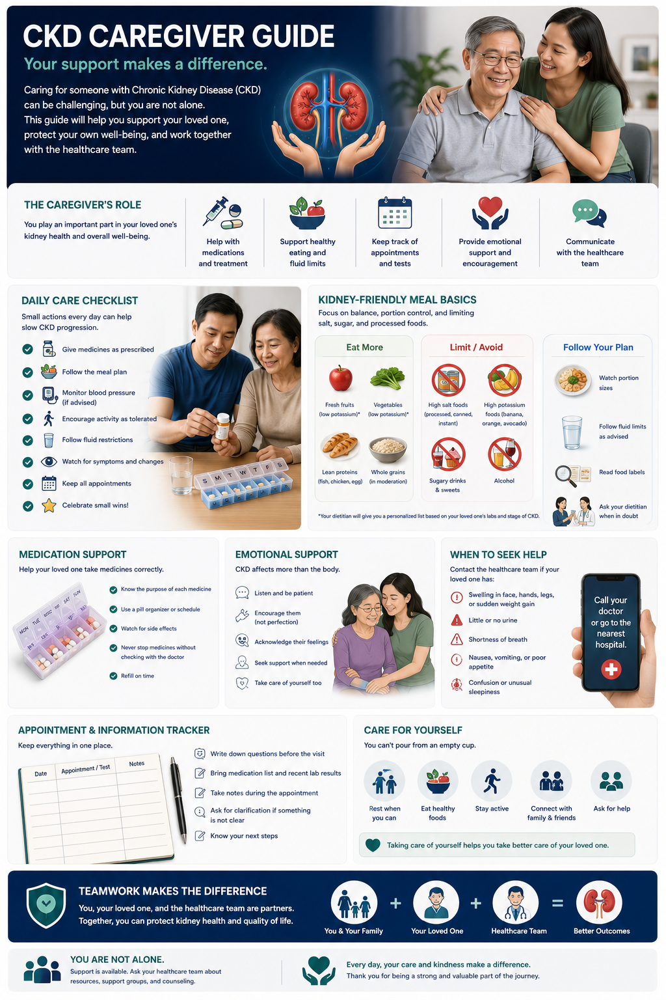
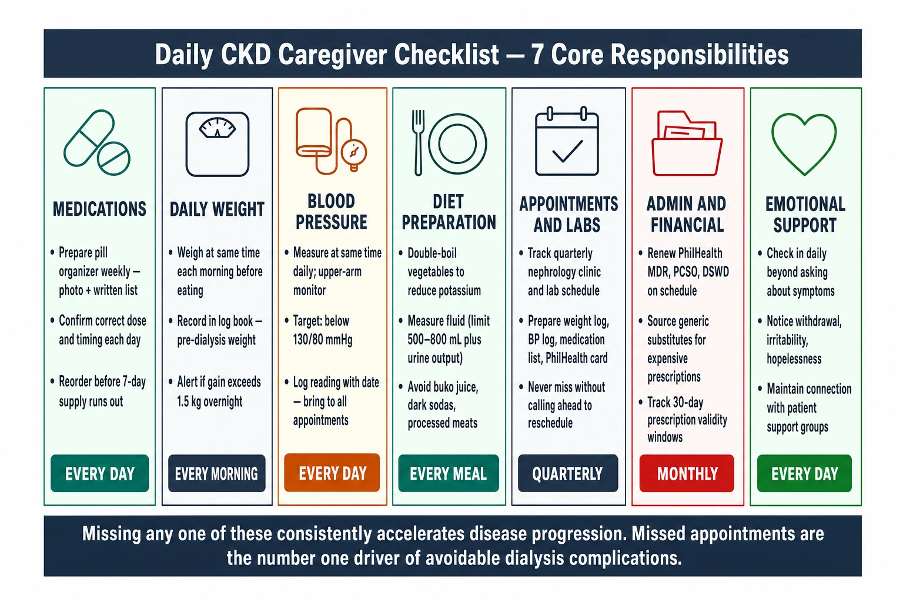
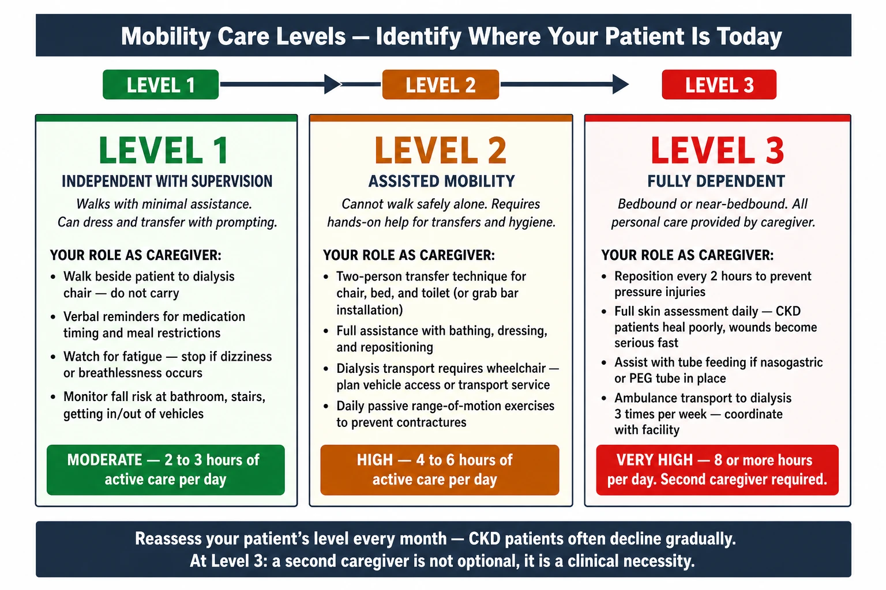
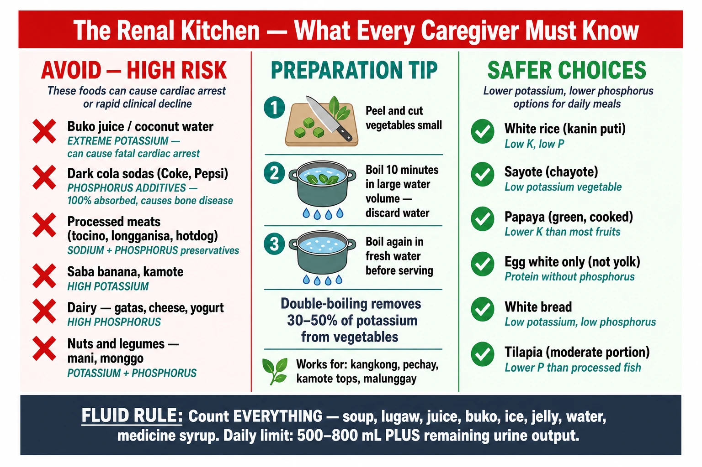
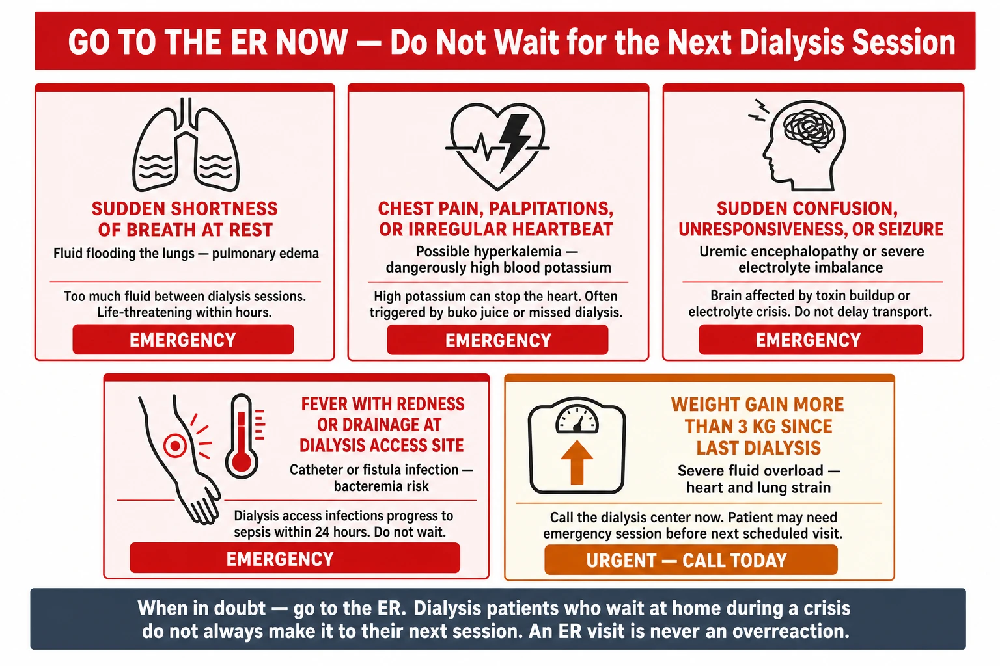
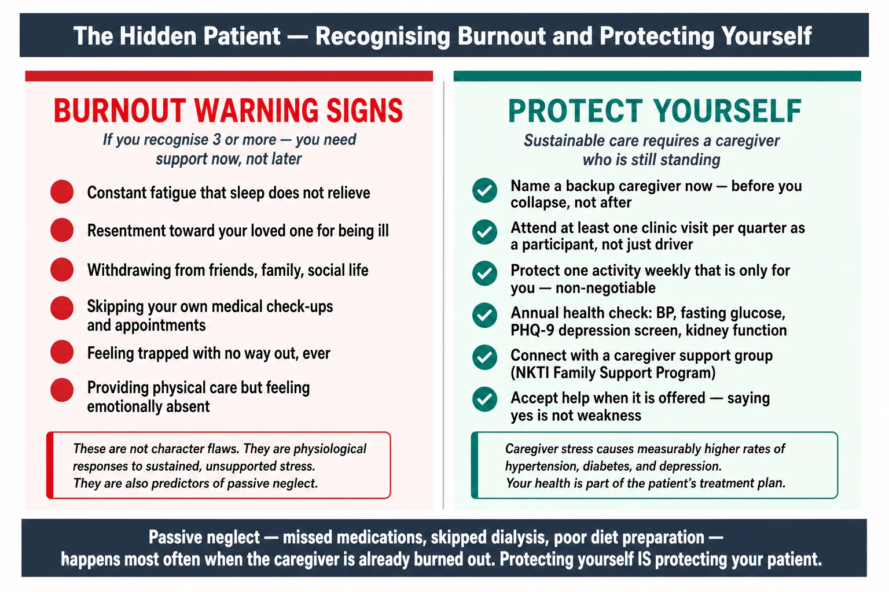
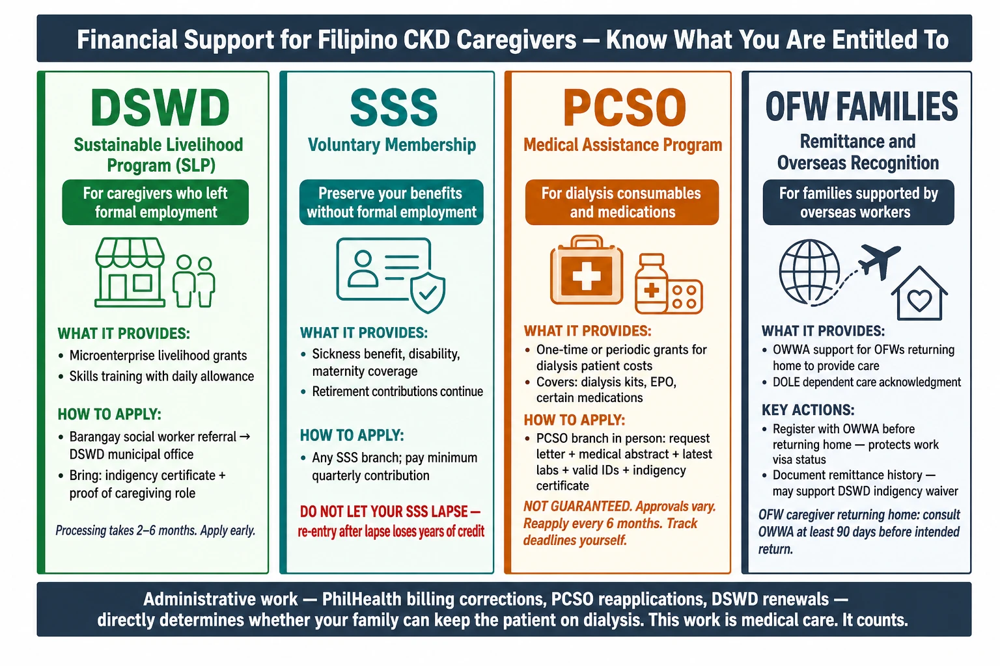

The Caregiver Nobody Talks AboutAng Tagapag-alaga na Hindi Pinag-uusapanAng Caregiver nga Walay NaghisgotIng Tagapag-alaga a Ala Gustung Pag-usapan
When a family member is diagnosed with CKD, the medical system focuses entirely on the patient. But at home, it is the spouse, child, or sibling who manages the medications, prepares the renal diet, monitors fluid intake, drives to three dialysis sessions a week, sits through lab results, and absorbs every fear and setback — usually with no education, no support, and no one asking how they are doing. The NKTI identifies family burden and caregiver exhaustion as a leading cause of patient dropout from treatment in the Philippines. This guide exists because you matter too. Kapag ang isang miyembro ng pamilya ay na-diagnose ng CKD, ang sistemang medikal ay ganap na nakatuon sa pasyente. Ngunit sa bahay, ito ay ang asawa, anak, o kapatid ang namamahala ng mga gamot, naghahanda ng renal diet, nagmamasid sa paggamit ng likido, nagmamaneho sa tatlong sesyon ng dialysis bawat linggo — kadalasan nang walang edukasyon, walang suporta, at walang nagtatanong kung paano sila. Tinutukoy ng NKTI ang pasanin ng pamilya bilang isang nangungunang sanhi ng pag-alis ng pasyente sa paggamot. Ang gabay na ito ay umiiral dahil mahalaga ka rin. Kung ang usa ka miyembro sa pamilya ma-diagnose og CKD, ang sistema sa medisina hingpit nakatuon sa pasyente. Apan sa balay, mao ang asawa, anak, o igsoon ang nagdumala sa mga tambal, nagluto sa renal diet, nagbantay sa paggamit sa likido, nagmaneho sa tulo ka sesyon sa dialysis matag semana — kasagaran nga walay edukasyon, walay suporta, ug walay nagpangutana kung komosta sila. Giila sa NKTI ang burden sa pamilya ingon usa sa nangunang hinungdan sa dropout sa pasyente. Kining giya naglungtad kay importante ka usab. Nung metung a miyembro ning pamilya ma-diagnose king CKD, ing sistema ning medisina buong nakatutok king pasyente. Pero king bale, ing asawa, anak, o kapatad na ing nagdumala ning gamut, nagluto ning renal diet, nagbantay king pag-inom ning tubig, nagmaneho pa tatlung sesyon ning dialysis bawat lingo — karinan nang ala pang edukasyon, ala pang suporta, at ala mang nagtatanong kung kumusta ila. Kilala ning NKTI ing bigat ning pamilya bilang metung sa pangunahing dahilan kung bakit nagsusuko deng pasyente king paggamot. Iting gabay sinulat para keka — importante ka naman.
This guide is written for you — not the patientAng gabay na ito ay para sa iyo — hindi sa pasyenteKining giya gisulat alang kanimo — dili alang sa pasyenteIting gabay sinulat para keka — e para king pasyente
Most CKD education materials are written for the patient. This one is written for the person sitting beside them — absorbing the medical information, translating it for the rest of the family, and still functioning every day. You are not just a support person. You are an essential part of your loved one’s medical team, whether the hospital recognizes that or not. Karamihan sa mga materyales ng edukasyon sa CKD ay para sa pasyente. Ang isang ito ay para sa taong nakaupo sa tabi nila — sumasaklaw ng medikal na impormasyon, ini-translate ito para sa buong pamilya, at patuloy na gumagana araw-araw. Hindi ka lamang isang tagasuporta. Ikaw ay isang mahalagang bahagi ng medikal na koponan ng iyong mahal sa buhay. Kadaghanan sa mga materyales sa edukasyon sa CKD gisulat alang sa pasyente. Kini gisulat alang sa tawo nga naglingkod sa ilang kilid — moabsorb sa medikal nga impormasyon, mo-translate niini alang sa tibuok pamilya, ug nagpadayon sa pagpanglihok adlaw-adlaw. Dili ka lamang usa ka tagasuporta. Ikaw usa ka importante nga bahin sa medikal nga team sa imong minahal. Karinan da ring mga materyales ning edukasyon king CKD sinulat para king pasyente. Iti sinulat para king taung nakaupo sa kilid na — misuyop king medikal na impormasyon, isinalin para king buong pamilya, at nagpadayon araw-araw. E ka basta tagasuporta. Ika metung a importanteng parte ning medikal na tim ning ating mahal sa biye, buri man nilang amanu o ali.
What CKD Actually Means — In Plain LanguageAno Talaga ang Ibig Sabihin ng CKD — Sa Simpleng WikaUnsa Gyud ang Kahulogan sa CKD — Sa Yano nga PinulonganNano Talaga ing Kabaldugan ning CKD — Matua a Salita
The kidneys are two fist-sized organs that filter your blood around the clock. In CKD, they lose this ability — gradually, permanently, and usually without warning. By the time most patients are diagnosed, they have already lost 60–70% of kidney function. CKD does not get better. The goal of treatment is to slow the decline, manage symptoms, and prevent complications. Understanding this is the starting point for every decision you will make as a caregiver. Ang mga bato ay dalawang organo na may sukat ng kamao na nagfi-filter ng iyong dugo sa buong araw. Sa CKD, nawawala nila ang kakayahang ito — unti-unti, permanente, at kadalasan ay walang babala. Sa oras na ang karamihang pasyente ay na-diagnose, nawala na nila ang 60–70% ng pag-andar ng bato. Ang CKD ay hindi gumagaling. Ang layunin ng paggamot ay pabagalin ang pagbaba, pamahalaan ang mga sintomas, at maiwasan ang mga komplikasyon. Ang mga kidney duha ka organo nga kasimpan sa ginagmay nga kamot nga nagfilter sa imong dugo sa tibuok adlaw. Sa CKD, nawad-an sila niining abilidad — hinay-hinay, permanente, ug kasagaran nga walay pasidaan. Sa panahon nga ang kadaghanan sa mga pasyente na-diagnose, nawala na nila ang 60–70% sa pag-andar sa kidney. Ang CKD dili maayo. Ang tumong sa pagtambal mao ang pagpahinay sa paghulog, pagdumala sa mga sintomas, ug paglikay sa mga komplikasyon. Ing deng batu aduang organ a kasimpan ning makam a nagfilter king daya king buong araw. King CKD, nawawala ra iting kakayahan — dahan-dahan, permanente, at madalas nang e ramdam. Nung ma-diagnose na ing pasyente, nawala na karela ing 60–70% ning trabaho ning batu. Ing CKD e gumagaling. Ing tutuo ning paggamot pabagusin ing pagbaba, pangasiwan deng sintomas, at pigilan deng komplikasyon.
| StageYugtoYugtoYugto | eGFR | What it means day-to-dayAno ang ibig sabihin araw-arawUnsa ang kahulogan adlaw-adlawNano ing kabaldugan araw-araw | Your caregiver focusPokus mo bilang tagapag-alagaImong pokus isip caregiverPokus mo bilang caregiver |
|---|---|---|---|
| G1–G2 | >60 | Usually no symptoms; patient feels wellKadalasan walang sintomas; malusog ang pakiramdamKasagaran walay sintomas; maayo ang paminawMadalas ala pang sintomas; malusug pa | Medication adherence, BP monitoring, clinic attendancePagsunod sa gamot, pagmamasid ng BP, pagdalo sa klinikaPagsunod sa tambal, pagbantay sa BP, pagdalo sa klinikaPagsunod king gamut, bantay ning BP, pagdayu king klinika |
| G3 | 30–59 | Fatigue, mild swelling, early diet restrictionsPagod, banayad na pamamaga, maagang paghihigpit sa diyetaKakapoy, banayad nga pamamaga, sayo nga pagpugong sa dietPagod, buntung pamaga, pag-umpisang paghigpit king pagkain | Diet monitoring, fluid tracking, labs every 3 monthsPagbabantay sa diyeta, pagsubaybay sa likido, lab tuwing 3 buwanPagbantay sa diet, pagsubay sa likido, lab kada 3 buwanBantay king pagkain, bantay king tubig, lab kada 3 bulan |
| G4 | 15–29 | Significant fatigue, nausea, appetite loss; dialysis preparation beginsMalaking pagod, pagduduwal, kawalan ng gana; pagsisimula ng paghahanda sa dialysisDakong kakapoy, pag-anduwal, kawala sa gana; nagsugod na ang pagpangandam sa dialysisMaragul na pagod, mausuk, awang kumain; pag-uumpisang paghanda para king dialysis | Dialysis access planning, emotional support, specialist coordinationPagpaplano ng dialysis access, emosyonal na suporta, koordinasyon ng espesyalistaPagplano sa dialysis access, emosyonal nga suporta, koordinasyon sa espesyalistaPagplano ning dialysis access, suporta king damdamin, koordinasyon king espesyalista |
| G5 / ESKD | <15 | Kidney failure — dialysis or transplant required to surviveKabiguan ng bato — kailangan ng dialysis o transplant para mabuhayKapalpak sa kidney — gikinahanglan ang dialysis o transplant aron mabuhiKabiguang batu — kailangan ning dialysis o transplant para mabiye | Full caregiver role: scheduling, transport, monitoring, emotional and financial supportBuong papel ng tagapag-alaga: pag-schedule, transportasyon, pagmamasid, emosyonal at pinansiyal na suportaTibuok papel sa pag-atiman: scheduling, transportasyon, pagbantay, emosyonal ug pinansiyal nga suportaBuong papel ning caregiver: scheduling, sasakyan, pagbantay, suporta sa damdamin at salapi |
What You Will Actually Be DoingAno Talaga ang Iyong GagawinUnsa Gyud ang Imong BuhatonNano Talaga ing Gagawin Mo

Nobody hands you a manual. Here is the honest list of what family caregivers for CKD patients typically manage every day. You do not need to do all of this alone — but you need to know what it involves. Walang nagbibigay sa iyo ng manwal. Narito ang tapat na listahan ng kung ano ang karaniwang pinapamahalaan ng mga tagapag-alaga araw-araw. Hindi mo kailangang gawin ang lahat nang mag-isa — ngunit kailangan mong malaman kung ano ang sangkot dito. Walay naghatag kanimo og manwal. Ania ang tapat nga lista sa unsa ang kasagarang ginadumala sa mga caregiver adlaw-adlaw. Dili ka kinahanglan nga buhaton ang tanan nag-inusara — apan kinahanglan nimong mahibaloan kung unsa ang gilakip niini. Ala mang nagbigay king ika ning manwal. Ari ing tapat a listahan kung nano ing madalas na pinamamahalaan da ring mga caregiver araw-araw. E mo kailangan gawin nganang lahat mag-isa — pero kailangan mong malaman kung nano ing kasangkot diti.
MedicationsMga GamotMga TambalGamut
CKD patients typically take 5–12 medications daily. Track doses, timing, refills, and interactions. A weekly pill organizer and written medication list with photos is not optional — it is essential safety infrastructure. Ang mga pasyenteng may CKD ay karaniwang umiinom ng 5–12 na gamot araw-araw. Subaybayan ang mga dosis, timing, refill, at mga interaksyon. Ang lingguhang pill organizer at nakasulat na listahan ng gamot na may litrato ay hindi opsyonal — ito ay mahalagang kaligtasan. Ang mga pasyente sa CKD kasagaran nag-inom og 5–12 ka tambal adlaw-adlaw. Subayan ang mga dosis, timing, refill, ug mga interaksyon. Ang weekly pill organizer ug gisulat nga lista sa tambal nga adunay litrato dili opsyonal — kini importante nga kaligtasan. Ing mga pasyenteng CKD madalas uminom ning 5–12 a gamut araw-araw. Bantayan deng dosis, timing, refill, at deng interaksyon. Ing weekly pill organizer at nakasulat a listahan ning gamut a maki litrato ali opsyonal — importante iti para sa kaligtasan.
Daily Weight & FluidPang-araw-araw na Timbang at LikidoAdlaw-adlaw nga Timbang ug LikidoAraw-araw a Timbang at Tubig
For dialysis patients, weight must be recorded every morning before eating. A gain of more than 1–1.5 kg overnight may signal dangerous fluid accumulation. You need a reliable home scale and a daily logbook. Para sa mga pasyenteng nasa dialysis, ang timbang ay dapat itala tuwing umaga bago kumain. Ang pagtaas ng higit sa 1–1.5 kg sa magdamag ay maaaring magpahiwatig ng mapanganib na akumulasyon ng likido. Kailangan mo ng timbangan at logbook sa bahay. Alang sa mga pasyente sa dialysis, ang timbang kinahanglan i-record matag buntag sa wala pa mokaon. Ang pagtaas og labaw sa 1–1.5 kg sa usa ka gabii mahimong magpakita og mapeligro nga akumulasyon sa likido. Kinahanglan og timbangan ug logbook sa balay. Para king mga pasyenteng dialysis, kailangan ma-record ing timbang araw-araw bago kumain. Kung lumaki ing timbang ning mahigit 1–1.5 kg sa metung a gabi, posibleng mapanganib na titipon ing tubig. Kailangan mong maki timbangan king bale at logbook.
Blood PressurePresyon ng DugoPresyur sa DugoPresyon ning Daya
Check BP at home at the same time each day. Use a digital upper-arm monitor — more reliable than wrist monitors. Target is usually below 130/80 mmHg. Record every reading; your doctor needs this trend data at every visit. Suriin ang BP sa bahay sa parehong oras araw-araw. Gumamit ng digital upper-arm monitor — mas maaasahan kaysa wrist monitor. Ang target ay karaniwang mas mababa sa 130/80 mmHg. Itala ang bawat pagbabasa. Susihon ang BP sa balay sa pareho nga oras adlaw-adlaw. Gamiton ang digital upper-arm monitor — mas kasaligan kaysa wrist monitor. Ang target kasagaran ubos sa 130/80 mmHg. I-record ang matag pagbasa. Sukatan ing BP king bale sa parehung oras araw-araw. Gamitin ing digital upper-arm monitor — mas mapagkatiwalaan kaysa wrist monitor. Ing target madalas mas ababa sa 130/80 mmHg. I-record deng pagbasa.
Clinic & Lab AppointmentsMga Appointment sa Klinika at LabMga Appointment sa Klinika ug LabMga Appointment king Klinika at Lab
CKD patients need nephrology follow-up every 1–3 months plus regular labs. Missed appointments are a major driver of disease progression. Keep a shared calendar with reminders 48 hours in advance. Ang mga pasyenteng may CKD ay nangangailangan ng nephrology follow-up bawat 1–3 buwan kasama ang regular na lab. Ang mga napalampas na appointment ay pangunahing dahilan ng pag-unlad ng sakit. Panatilihing may shared calendar na may reminders 48 oras bago. Ang mga pasyente sa CKD nagkinahanglan og nephrology follow-up matag 1–3 ka buwan plus regular nga lab. Ang mga napalpas nga appointment usa sa mga panguna nga nagpapadali sa sakit. Tipigan ang shared calendar nga adunay mga reminder 48 oras daan. Ing mga pasyenteng CKD kailangan mang nephrology follow-up bawat 1–3 bulan kasama ing regular a lab. Ing mga napalampas a appointment pangunahing dahilan kung bakit lumalala ing sakit. Meki shared calendar a maki mga reminder 48 oras bago.
Diet PreparationPaghahanda ng PagkainPaghanda sa PagkaonPaghanda ning Makain
The renal diet restricts potassium, phosphorus, sodium, and sometimes protein — affecting almost every Filipino dish. The caregiver becomes the de facto cook, label-reader, and food monitor. This is a significant invisible burden that rarely gets acknowledged. Ang renal diet ay nagbabawal ng potassium, phosphorus, sodium, at minsan ng protina — nakakaapekto sa halos bawat putaheng Pilipino. Ang tagapag-alaga ay nagiging de facto na lutuin at nagbabasa ng label. Ito ay isang malaking hindi nakikitang pasanin. Ang renal diet nagpugong sa potassium, phosphorus, sodium, ug usahay protina — nakaapekto sa hapit matag putahe sa Pilipinas. Ang caregiver mahimong de facto nga mangluluto ug magbabasa sa label. Kini usa ka dakong dili makita nga burden. Ing renal diet pinigilan ing potassium, phosphorus, sodium, at maminsan protein — nakakaapekto king karinan Filipino a putahe. Ing caregiver nagiging de facto lutuin at mambasa ning label. Iti metung a maragul a e makita a bigat a bihirang kinikilala.
Emotional SupportEmosyonal na SuportaEmosyonal nga SuportaSuporta sa Damdamin
Depression and anxiety affect up to 40% of CKD patients. Your loved one may become withdrawn, irritable, or hopeless — especially after diagnosis or starting dialysis. This is clinical, not personal. But it adds to your burden significantly. Ang depresyon at pagkabalisa ay nakakaapekto sa hanggang 40% ng mga pasyenteng may CKD. Ang iyong mahal sa buhay ay maaaring maging malayo sa iba, mairitahin, o walang pag-asa — lalo na pagkatapos ng diagnosis o pagsisimula ng dialysis. Ito ay klinikal, hindi personal. Ang depresyon ug kabalaka nakaapekto sa hangtod 40% sa mga pasyente sa CKD. Ang imong minahal mahimong mawala sa uban, mairitahon, o walay paglaum — labi na human sa diagnosis o pagsugod sa dialysis. Kini klinikal, dili personal. Ing depresyon at pagkabalisa nakakaapekto king hanggang 40% da ring mga pasyenteng CKD. Ing ating mahal sa biye maaaring mag-isa, mairita, o mawalan ning pag-asa — lalu na pagkatapos ning diagnosis o pagsisimula ning dialysis. Klinikal iti, e personal.
Financial Navigation & Administrative LegworkPag-navigate ng Tulong Pinansyal at mga PapelesPag-navigate sa Tabang Pinansyal ug mga PapelesPag-navigate ning Tulong Pinansyal at deng Papeles
Nobody names this task, but every caregiver does it: finding assistance programs, gathering documents, queuing at offices, and following up when applications stall. PhilHealth MDR renewal, PCSO letters, DSWD indigency certificates, hospital billing disputes, prescription sourcing — none of it does itself. The patient is usually too ill to manage their own paperwork. This is unpaid administrative work that can consume entire days, and it directly determines whether the family can afford to keep the patient on dialysis. Walang nagbibigay ng pangalan sa gawaing ito, ngunit ginagawa ng bawat caregiver: paghahanap ng mga programa sa tulong, pag-iipon ng mga dokumento, pag-pila sa mga opisina, at pag-follow up kapag nag-stall ang mga aplikasyon. PhilHealth MDR renewal, PCSO letters, DSWD indigency certificates, hospital billing disputes, paghahanap ng reseta — wala sa mga ito ang gumagawa ng sarili. Kadalasang masyadong may sakit ang pasyente para pangalagaan ang kanilang sariling mga papeles. Ito ay hindi binabayarang trabaho na maaaring kumain ng buong araw, at direktang nakakaimpluwensya kung kaya ng pamilya na panatilihin ang pasyente sa dialysis. Walay naghinganlan niining buluhaton, apan gibuhat sa matag caregiver: pagpangita sa mga programa sa tabang, pagtigom sa mga dokumento, paglinya sa mga opisina, ug pag-follow up kung ang mga aplikasyon natigok. PhilHealth MDR renewal, PCSO letters, DSWD indigency certificates, hospital billing disputes, pagpangita sa tambal — wala niini ang nagbuhat sa kaugalingon. Kasagaran labis nga masakit ang pasyente aron dumala sa ilang kaugalingong mga papeles. Kini walay bayad nga trabaho nga makakaon og tibuok nga mga adlaw, ug direktang nakaapekto kung kaya ba sa pamilya nga padayon ang pasyente sa dialysis. Ala mang nagbibigay ning pangalan king gawaing iti, pero ginagawa ning bawat caregiver: paghahanap da ring mga programa sa tulong, pag-iipon da ring mga dokumento, pag-pila king deng opisina, at pag-follow up nung nag-stall deng mga aplikasyon. PhilHealth MDR renewal, PCSO letters, DSWD indigency certificates, hospital billing disputes, paghahanap ning gamut — ala sa mga iti ing gumagawa ning sarili. Madalas masyadong may sakit ing pasyente para pangalagaan ing sariling mga papeles nila. Iti e binabayarang trabaho a makakaain ning buong mga aldo, at direktang nakakaapekto kung kaya ning pamilya na panatilihin ing pasyente sa dialysis.

Your 7 non-negotiable daily responsibilities as a CKD caregiver — with frequency badges so nothing slips through the cracks.Ang iyong 7 pangunahing pang-araw-araw na responsibilidad bilang tagapag-alaga ng CKD — na may mga frequency badge para walang mapalampas.Ang imong 7 pangunahing adlaw-adlaw nga responsibilidad isip CKD caregiver — uban sa mga frequency badge aron walay malimtan.Ing iyong 7 pangunahing pang-araw-araw a responsibilidad bilang caregiver ning CKD — a maki deng frequency badge para ala mapalawig.
What to bring to every dialysis sessionAno ang dadalhin sa bawat sesyon ng dialysisUnsa ang dad-on sa matag sesyon sa dialysisNano ing dalaun sa bawat sesyon ning dialysis
- Today’s weight (taken this morning, before eating or drinking)Timbang ngayon (kinuha ngayong umaga, bago kumain o uminom)Timbang karon (gikuha karon buntag, sa wala pa mokaon o moinom)Timbang ngeni (kinuha itang umaga, bago kumain o uminom)
- Complete medication list with doses and timingKumpletong listahan ng gamot na may dosis at timingKumpletong lista sa tambal nga adunay mga dosis ug timingKumpletong listahan ning gamut a maki dosis at timing
- BP log from the past weekLog ng BP mula sa nakaraang linggoLog sa BP gikan sa milabay nga semanaLog ning BP mula king nakaraang lingo
- PhilHealth MDR card and any new prescriptions or lab resultsPhilHealth MDR card at anumang bagong reseta o resulta ng labPhilHealth MDR card ug bisan unsang bag-ong reseta o resulta sa labPhilHealth MDR card at deng bagong reseta o resulta ning lab
- A CKD-appropriate snack for after the session (low-potassium, low-phosphorus)Merienda na angkop sa CKD para pagkatapos ng sesyon (mababa sa potassium at phosphorus)Snack nga angay sa CKD alang human sa sesyon (ubos sa potassium ug phosphorus)Merienda a angkop para king CKD pagkatapos ning sesyon (ababa king potassium at phosphorus)
Financial support — the legwork that falls on youTulong pinansyal — ang mga gawaing napupunta sa iyoPinansyal nga tabang — ang mga buluhaton nga napunta kanimoTulong pinansyal — deng gawain a napupunta keka
- PhilHealth MDR: Renew annually. Confirm the dialysis center files claims correctly — billing errors that go unchallenged become out-of-pocket charges. Appeal denied claims in writing if needed.PhilHealth MDR: I-renew taon-taon. Kumpirmahing tama ang pag-file ng dialysis center ng mga claim. I-appeal ang mga tinanggihang claim sa sulat kung kailangan.PhilHealth MDR: I-renew matag tuig. Kumpirmaha nga husto ang pag-file sa dialysis center sa mga claim. I-appeal ang gi-deny nga claim sa sinulat kung gikinahanglan.PhilHealth MDR: I-renew taon-taon. Kumpirmahin a tama ing pag-file ning dialysis center ning deng claim. I-appeal deng tinanggihang claim sa sulat kung kailangan.
- PCSO Medical Assistance: Each application needs a request letter, medical abstract, latest labs, valid IDs, and proof of low income — filed in person at a PCSO branch. Approvals are not guaranteed; reapply each cycle. You track the deadlines and queue.PCSO Medical Assistance: Bawat aplikasyon nangangailangan ng request letter, medical abstract, pinakabagong lab, valid IDs, at patunay ng mababang kita — in-person sa PCSO branch. Hindi garantisado ang pag-apruba; mag-reapply sa bawat cycle. Ikaw ang nagtatandaan ng mga deadline at pumipila.PCSO Medical Assistance: Ang matag aplikasyon nagkinahanglan og request letter, medical abstract, pinakabag-o nga lab, valid IDs, ug ebidensya sa ubos nga kita — in-person sa PCSO branch. Dili garantisado ang pag-apruba; mag-reapply sa matag cycle. Ikaw ang nagsubay sa mga deadline ug naglinya.PCSO Medical Assistance: Bawat aplikasyon kailangan ning request letter, medical abstract, pinakabagong lab, valid IDs, at patunay ning mababang kita — in-person sa PCSO branch. E garantisado ing pag-apruba; mag-reapply sa bawat cycle. Ika ing nagtatandaan ning deng deadline at pumipila.
- DSWD certificates & programs: Indigency certificates, Sustainable Livelihood Program applications, and supplemental assistance all require separate forms and separate office visits. Documents expire. Requirements change without notice. You find out when the application is rejected.DSWD certificates at programa: Mga indigency certificate, SLP applications, at supplemental assistance ay nangangailangan ng hiwalay na mga form at hiwalay na pagbisita sa opisina. Ang mga dokumento ay nag-e-expire. Nagbabago ang mga kinakailangan nang walang abiso. Malalaman mo kapag na-reject ang aplikasyon.DSWD certificates ug mga programa: Mga indigency certificate, SLP applications, ug supplemental assistance nagkinahanglan og lain-laing mga form ug lain-laing pagbisita sa opisina. Ang mga dokumento nag-expire. Nagbag-o ang mga kinahanglanon nga walay pahibalo. Mahibaloan nimo kung gi-reject ang aplikasyon.DSWD certificates at deng programa: Deng indigency certificate, SLP applications, at supplemental assistance kailangan ning hiwalay a mga form at hiwalay a pagbisita sa opisina. Ing mga dokumento nag-e-expire. Nagbabago deng kinakailangan nang ala abiso. Malalaman mu nung na-reject ing aplikasyon.
- Dialysis center coordination: Liaising with the social worker for subsidised sessions, sourcing EPO and iron sucrose when the center runs short, and coordinating prescription renewals so the patient never runs out between clinic visits.Koordinasyon sa dialysis center: Pakikipag-ugnayan sa social worker para sa mga subsidised na sesyon, paghahanap ng EPO at iron sucrose kapag kulang ang stock ng center, at pag-coordinate ng mga prescription renewal para hindi maubusan ang pasyente sa pagitan ng mga clinic visit.Koordinasyon sa dialysis center: Pakig-ugnayan sa social worker alang sa mga subsidised nga sesyon, pagpangita sa EPO ug iron sucrose kung kulang ang stock, ug koordinasyon sa mga prescription renewal aron dili maubohan ang pasyente tali sa mga clinic visit.Koordinasyon sa dialysis center: Pakikipag-ugnayan sa social worker para king deng subsidised a sesyon, paghahanap ning EPO at iron sucrose nung kulang ing stock, at koordinasyon ning deng prescription renewal para e maubusan ing pasyente sa pagitan ning deng clinic visit.
- Hospital billing: Reviewing itemised bills for errors — common in Philippine hospitals. Understanding which charges PhilHealth covers. Negotiating payment arrangements at discharge when the family cannot pay in full.Hospital billing: Pagsusuri ng itemised bills para sa mga error — karaniwan sa mga ospital sa Pilipinas. Pag-unawa kung aling mga singil ang saklaw ng PhilHealth. Pag-negotiate ng payment arrangement sa discharge kapag hindi makabayad nang buo ang pamilya.Hospital billing: Pagsusi sa itemised bills alang sa mga sayop — kasagaran sa mga ospital sa Pilipinas. Pagsabut kung unsang mga singil ang gisakop sa PhilHealth. Pag-negotiate sa payment arrangement sa discharge kung dili makabayar nang buo ang pamilya.Hospital billing: Pagsusuri ning itemised bills para king deng error — karaniwan king deng ospital sa Pilipinas. Pag-intindi kung nung mga singil ing saklaw ning PhilHealth. Pag-negotiate ning payment arrangement sa discharge nung e makabayad nang buo ing pamilya.
- Prescription management: Sourcing cheaper generics when the brand is unaffordable. Tracking which pharmacy has stock. Managing the 30-day validity window so the patient never runs out before the next clinic visit.Pamamahala ng reseta: Paghahanap ng mas murang generic kapag hindi kaya ang branded. Pagsubaybay kung saang parmasya may stock. Pamamahala ng 30-araw na bisa ng reseta para hindi maubusan bago ang susunod na clinic visit.Pagdumala sa reseta: Pagpangita sa mas barato nga generic kung dili makuha ang branded. Pagsubay kung unsang parmasya adunay stock. Pagdumala sa 30-ka-adlaw nga balidad sa reseta aron dili maubohan sa wala pa ang sunod nga clinic visit.Pamamahala ning reseta: Paghahanap ning mas murang generic nung e kayang branded. Pagbabantay kung nung parmasya maki stock. Pamamahala ning 30-aldo a bisa ning reseta para e maubusan ing pasyente bago ing susunod a clinic visit.
Tell your nephrologist about the paperwork burdenSabihin sa nephrologist ang tungkol sa pasanin ng mga papelesSuginlan ang nephrologist bahin sa burden sa mga papelesSabihin sa nephrologist mu tungkol king bigat da ring deng papeles
If navigating financial support has become overwhelming, say so at the next clinic visit. The nephrologist can direct you to the dialysis center social worker, write support letters for PCSO or DSWD applications, and flag the case for priority assistance. The administrative burden on caregivers is a clinical issue — it directly predicts whether the patient will drop out of treatment. Kung naging napakalaki na ang pag-navigate ng tulong pinansyal, sabihin ito sa susunod na clinic visit. Maaaring i-refer ka ng nephrologist sa social worker ng dialysis center, magsulat ng support letter para sa PCSO o DSWD, at i-flag ang kaso para sa priority assistance. Ang pasanin ng mga papeles sa mga caregiver ay klinikal na isyu — direktang nagpapahiwatig kung aalis ba ang pasyente sa paggamot. Kung nahimong dako na ang pag-navigate sa pinansyal nga tabang, sultihi kini sa sunod nga clinic visit. Mahimo nga i-refer ka sa nephrologist sa social worker sa dialysis center, mosulat og support letter alang sa PCSO o DSWD, ug i-flag ang kaso alang sa priority assistance. Ang burden sa mga papeles sa mga caregiver klinikal nga isyu — direktang nagpakita kung mohunong ba ang pasyente sa pagtambal. Kung napakalaki na ning pag-navigate ning tulong pinansyal, sabihin iti sa susunod a clinic visit. Maaaring i-refer ka ning nephrologist sa social worker ning dialysis center, magsulat ning support letter para king PCSO o DSWD, at i-flag ing kaso para king priority assistance. Ing bigat da ring deng papeles king mga caregiver klinikal a isyu — direktang nagpapakita kung aalis ba ing pasyente sa paggamot.
Mobility-Impaired Patients: Levels of Care and What Each RequiresMga Pasyenteng May Limitadong Paggalaw: Antas ng Pag-aalaga at Kung Ano ang Kailangan ng Bawat IsaMga Pasyente nga Limitado ang Paglihok: Mga Lebel sa Pag-atiman ug Unsa ang Gikinahanglan sa Matag IsaDeng Pasyenteng Limitado ing Galaw: Deng Antas ning Pag-alaga at Nano ing Kailangan ning Balang Metung

Three mobility care levels for CKD patients — what each looks like and what it demands physically from you as the caregiver. Reassess monthly as CKD often causes gradual decline.Tatlong antas ng mobility care para sa mga pasyenteng CKD — kung ano ang hitsura ng bawat isa at kung ano ang pisikal na hinihingi nito sa iyo bilang tagapag-alaga. Suriin muli bawat buwan dahil ang CKD ay madalas nagdudulot ng unti-unting pagbaba.Tulo ka lebel sa mobility care alang sa mga pasyente sa CKD — kung unsa ang hitsura sa matag usa ug unsa ang pisikal nga gikinahanglan niini gikan kanimo isip caregiver. Susiha pag-usab matag buwan kay ang CKD kasagaran nagdala og gradwal nga paghulog.Atlung antas ning mobility care para king deng pasyenteng CKD — kung nano ing hitsura ning bawat metung at kung nano ing pisikal a hinihingi nito keka bilang caregiver. Siyasatin pang bawat bulan ta ing CKD madalas nagdudulot ning unti-unting pagbaba.
CKD frequently coexists with conditions that impair mobility — diabetic peripheral neuropathy, stroke, severe anemia, fluid overload, and advanced frailty. As kidney function declines, physical capacity often declines with it. Understanding what level of mobility your patient has now — and anticipating what comes next — is one of the most practical things a caregiver can do. The care demands are very different depending on whether the patient can walk independently, needs assistance, or is fully dependent. Ang CKD ay madalas magkasama sa mga kondisyon na nakakaapekto sa paggalaw — diabetic peripheral neuropathy, stroke, matinding anemia, fluid overload, at advanced na kahinaan. Habang bumababa ang kidney function, mababa rin ang kakayahang pisikal. Ang pag-unawa kung anong antas ng mobility ang mayroon ang iyong pasyente ngayon — at ang pag-aaral kung ano ang susunod — isa sa mga pinaka-praktikal na bagay na magagawa ng isang caregiver. Ang mga pangangailangan sa pag-aalaga ay napaka-iba depende kung maaari siyang maglakad nang mag-isa, nangangailangan ng tulong, o ganap na nakasalalay sa iba. Ang CKD kasagaran mag-uban sa mga kondisyon nga nakaapekto sa paglihok — diabetic peripheral neuropathy, stroke, grabe nga anemia, fluid overload, ug advanced nga kaluyang. Habang mohulog ang kidney function, mohulog usab ang pisikal nga kapasidad. Ang pagsabut kung unsa nga lebel sa mobility ang imong pasyente karon — ug ang pag-ila kung unsa ang sunod — usa sa labing praktikal nga mahimo sa usa ka caregiver. Ang mga gikinahanglan sa pag-atiman lahi kaayo depende kung makalihok siya nag-inusara, nanginahanglan og tabang, o hingpit nga nagdepende sa uban. Ing CKD madalas makasamang maki deng kondisyon a nakakaapekto king galaw — diabetic peripheral neuropathy, stroke, malang anemia, fluid overload, at advanced a kahinaan. Habang bumababa ing kidney function, mababa naman ing pisikal a kakayahan. Ing pag-intindi kung nano a antas ning mobility ing pasyente mu ngeni — at ing pagpaandam kung nano ing susunod — metung sa pinaka-praktikal a magagawa ning caregiver. Napaka-iba deng pangangailangan sa pag-alaga depende kung makalakad siya mag-isa, kailangan ning tulong, o buong nakadepende sa iba.
Level 1 — Independent with SupervisionAntas 1 — Malaya Ngunit Nangangailangan ng PagmamasidLebel 1 — Malaya Apan Nanginahanglan og PagbantayAntas 1 — Malaya Pero Kailangan ning Pagbabantay
What this looks like: Patient walks without a device, manages personal hygiene independently, can transfer (sit to stand, bed to chair) without help. May have mild weakness, fatigue after exertion, or occasional dizziness from antihypertensives.
Caregiver tasks: Monitor for signs of deconditioning — reduced walking distance, increased shortness of breath on exertion, new grip weakness. Ensure the home is fall-proofed: remove loose rugs, install grab bars in the bathroom, ensure adequate lighting. Accompany to dialysis and clinic appointments. Monitor post-dialysis fatigue, which is often severe and underappreciated.
Watch for: Orthostatic hypotension (dizziness on standing — common with antihypertensives and ultrafiltration). Peripheral neuropathy in feet — ask your patient daily if they feel any numbness, burning, or cuts they did not notice. Inspect feet weekly; diabetic CKD patients lose protective sensation and can develop wounds without knowing.
Ano ang hitsura nito: Naglalakad ang pasyente nang walang device, nag-aalaga ng sarili nang mag-isa, at kaya mag-transfer (pag-upo sa pagtayo, kama papuntang upuan) nang walang tulong. Maaaring may banayad na kahinaan, pagod pagkatapos magsikap, o paminsan-minsang pagkahilo mula sa mga antihypertensive na gamot.
Mga gawain ng caregiver: Bantayan ang mga palatandaan ng deconditioning — mas maikling distansyang nalakad, mas maraming pag-hingal sa exertion, bagong kahinaan ng hawak. Tiyaking ligtas ang bahay mula sa pagkahulog. Samahan sa dialysis at clinic. Bantayan ang matinding pagod pagkatapos ng dialysis.
Bantayan: Orthostatic hypotension (pagkahilo sa pagtayo). Peripheral neuropathy sa paa — tanungin araw-araw kung may manhid, sunog, o sugat na hindi nila naramdaman. Suriin ang mga paa linggu-linggo.
Unsa kining hitsura: Naglakaw ang pasyente nga walay device, nag-atiman sa kaugalingon nag-inusara, ug makatransfer (paglingkod sa pagtindog, higdaanan ngadto sa lingkoranan) nga walay tabang. Mahimong adunay banayad nga kaluyang, kakapoy human sa paningkamot, o usahay pagkahilo gikan sa mga antihypertensive.
Mga buluhaton sa caregiver: Bantayan ang mga timailhan sa deconditioning — mas mubo nga distansya sa paglakaw, mas daghang ginhawa sa paningkamot, bag-ong kaluyang sa kamot. Tiyakan ang kaluwasan sa balay. Ubanan sa dialysis ug klinika. Bantayan ang grabe nga kakapoy human sa dialysis.
Bantayan: Orthostatic hypotension (pagkahilo sa pagtindog). Peripheral neuropathy sa tiil — pangutana adlaw-adlaw kung adunay kamad, sunog, o samad nga wala nila mamatikdan. Susiha ang mga tiil matag semana.
Nano ing hitsura nito: Naglalakad ing pasyente nang ala device, nag-aalaga ning sarili mag-isa, at kaya mag-transfer (pag-upo sa pagtayo, kama papuntang upuan) nang ala tulong. Maaaring maki banayad a kahinaan, pagod pagkatapos magsikap, o maminsan-minsang pagkahilo mula king deng antihypertensive.
Deng gawain ning caregiver: Bantayan deng palatandaan ning deconditioning — mas maikling distansyang nalakad, mas maraming pag-hingal sa exertion, bagong kahinaan ning hawak. Tiyakin a ligtas ing bale mula sa pagkahulog. Samahan pa dialysis at klinika. Bantayan ing matinding pagod pagkatapos ning dialysis.
Bantayan: Orthostatic hypotension (pagkahilo sa pagtayo). Peripheral neuropathy king saquid — tanungin araw-araw kung maki manhid, sunog, o sugat a e nila naramdaman. Suriin deng saquid bawat lingo.
Level 2 — Assisted MobilityAntas 2 — Paggalaw na May TulongLebel 2 — Paglihok nga Adunay TabangAntas 2 — Paggalaw a Maki Tulong
What this looks like: Uses a cane, walker, or wheelchair for some or all mobility. Can perform some self-care with effort but needs standby assistance or physical help for bathing, dressing, and transfers. Common in CKD patients with diabetic neuropathy, post-stroke weakness, severe anemia, or significant fluid overload in the legs.
Caregiver tasks: Assist with transfers — learn the correct technique to protect both your back and the patient (bend your knees, keep your back straight, use a gait belt if available). Help with bathing — a shower chair and handheld showerhead are essential. Manage skin integrity: inspect pressure points (sacrum, heels, ankles) daily for redness or breakdown, especially if the patient spends hours in a chair during dialysis. Organize the home for wheelchair or walker use: clear pathways, ensure doorways are wide enough, relocate the sleeping area to the ground floor if possible.
Watch for: Pressure injuries — CKD patients have poor wound healing, high infection risk, and reduced skin integrity from uremic toxins. Any wound that does not improve in 5–7 days needs medical attention. Muscle wasting (sarcopenia) is accelerated in dialysis patients — note if the patient's thighs or arms look thinner over weeks.
Ano ang hitsura nito: Gumagamit ng tungkod, walker, o wheelchair para sa ilan o lahat ng paggalaw. Kaya gumawa ng ilang pag-aalaga sa sarili ngunit nangangailangan ng tulong sa paliligo, pananamit, at pag-transfer. Karaniwan sa mga pasyenteng CKD na may diabetic neuropathy, post-stroke weakness, matinding anemia, o malubhang fluid overload sa mga binti.
Mga gawain ng caregiver: Tulungan sa pag-transfer — matuto ng tamang pamamaraan para protektahan ang iyong likod at ang pasyente (yumuko ang tuhod, tuwid ang likod, gumamit ng gait belt kung mayroon). Tulungan sa paliligo — kailangan ang shower chair at handheld na showerhead. Pangalagaan ang balat: suriin ang mga pressure points (sacrum, sakong, bukong-bukong) araw-araw para sa pamumula o sugat. Ayusin ang bahay para sa wheelchair o walker.
Bantayan: Pressure injuries — ang mga pasyenteng CKD ay may mahinang paggaling ng sugat at mataas na panganib sa impeksyon. Anumang sugat na hindi gumagaling sa loob ng 5–7 araw ay nangangailangan ng medikal na atensyon. Sarcopenia — pansinin kung kumikitid ang mga hita o braso sa paglipas ng mga linggo.
Unsa kining hitsura: Naggamit og tungkod, walker, o wheelchair sa pipila o tanan nga paglihok. Makabuhat og pipila ka pag-atiman sa kaugalingon apan nanginahanglan og tabang sa pagligo, pagsinina, ug pag-transfer. Kasagaran sa mga pasyente sa CKD nga adunay diabetic neuropathy, post-stroke nga kaluyang, grabe nga anemia, o grabe nga fluid overload sa mga bitiis.
Mga buluhaton sa caregiver: Tabangan sa pag-transfer — matun-i ang husto nga pamaagi aron mapanalipdan ang imong likod ug ang pasyente. Tabangan sa pagligo — kinahanglan ang shower chair ug handheld nga showerhead. Bantayan ang panit: susiha ang mga pressure points adlaw-adlaw alang sa pagpula o samad. I-organisa ang balay alang sa wheelchair o walker.
Bantayan: Pressure injuries — ang mga pasyente sa CKD adunay maluya nga paghimsog sa samad. Bisan unsang samad nga dili moayo sa 5–7 ka adlaw kinahanglan medikal nga atensyon. Sarcopenia — matikdi kung mangitgit ang mga paa o bukton sa sulod sa mga semana.
Nano ing hitsura nito: Gumagamit ning tungkod, walker, o wheelchair para king ilan o lahat ning galaw. Kaya gumawa ning ilang pag-aalaga ning sarili pero kailangan ning tulong sa paliligo, damit, at pag-transfer. Karaniwan king deng pasyenteng CKD a maki diabetic neuropathy, post-stroke a kahinaan, malang anemia, o maragul a fluid overload king deng binti.
Deng gawain ning caregiver: Tulungan sa pag-transfer — matutu ning tamang paraan para protektahan ing likod mu at ing pasyente. Tulungan sa paliligo — kailangan ing shower chair at handheld a showerhead. Pangalagaan ing balat: suriin deng pressure points (sacrum, sakung, bukung-bukung) araw-araw para king pamumula o sugat. Ayusin ing bale para king wheelchair o walker.
Bantayan: Pressure injuries — deng pasyenteng CKD maki mahinang paggaling ning sugat at mataas a peligro sa impeksyon. Anumang sugat a e gumagaling sa loob ning 5–7 aldo kailangan ning medikal a atensyon. Sarcopenia — pansinin kung kumikitid deng hita o braso sa paglipas ning deng lingo.
Level 3 — Fully DependentAntas 3 — Ganap na NakasalalayLebel 3 — Hingpit nga NagdependeAntas 3 — Buong Nakadepende
What this looks like: Bedbound or chair-bound, unable to perform any self-care independently. Requires full assistance for all activities of daily living — bathing, dressing, feeding, toileting, repositioning. Most commonly seen in advanced CKD/ESKD with multiple comorbidities: severe heart failure, prior stroke with residual paralysis, advanced diabetic complications, or end-stage frailty.
Caregiver tasks: Repositioning every 2 hours to prevent pressure ulcers — set a timer. Passive range-of-motion exercises daily to prevent contractures and maintain circulation (gently move each joint through its full range). Skin care: keep skin clean, dry, and moisturised; use a barrier cream on bony prominences. Oral hygiene twice daily even if the patient is not eating by mouth — uremic patients develop painful oral ulcers. Catheter care if the patient has a urinary catheter; fistula care if on dialysis (no BP cuffs, blood draws, or IV lines on the fistula arm).
This level requires a team: One caregiver alone cannot sustainably manage a fully dependent dialysis patient. Speak to the nephrologist about home nursing, barangay health worker support, or admission to a step-down facility for respite. Caregiver collapse at this level is not a risk — it is a certainty without structured support.
Watch for: Stage 1 pressure injuries (non-blanching redness over bony prominences) — catch these before they break down. Aspiration risk if swallowing is impaired — elevate the head of the bed 30–45° during and after meals. Contractures developing in hands, elbows, or feet — early physiotherapy referral prevents permanent deformity.
Ano ang hitsura nito: Nakaratay sa kama o nakaupo sa upuan, hindi makagawa ng anumang pag-aalaga ng sarili nang mag-isa. Nangangailangan ng ganap na tulong para sa lahat ng aktibidad araw-araw. Kadalasang nakikita sa advanced CKD/ESKD na may maraming karamdaman: matinding heart failure, naunang stroke na may natitirang paralisis, advanced na komplikasyon ng diabetes, o end-stage frailty.
Mga gawain ng caregiver: Pag-repositioning tuwing 2 oras para maiwasan ang pressure ulcers — mag-set ng timer. Passive range-of-motion exercises araw-araw para maiwasan ang contractures. Pag-aalaga ng balat: malinis, tuyo, at moisturised; gumamit ng barrier cream. Oral hygiene dalawang beses sa isang araw. Pag-aalaga ng catheter kung mayroon; pag-aalaga ng fistula (huwag gumamit ng BP cuff, blood draw, o IV sa fistula arm).
Ang antas na ito ay nangangailangan ng team: Hindi kayang pangalagaan ng isang caregiver nang mag-isa ang isang ganap na nakasalalay na pasyenteng nasa dialysis. Kausapin ang nephrologist tungkol sa home nursing o barangay health worker support.
Bantayan: Stage 1 pressure injuries (hindi-nagbabago ang pamumula sa bony prominences). Panganib sa aspiration — itaas ang ulo ng kama ng 30–45° habang kumakain at pagkatapos. Contractures sa mga kamay, siko, o paa — maagang referral sa physiotherapy.
Unsa kining hitsura: Naghigda sa higdaanan o naglingkod sa lingkoranan, dili makabuhat og bisan unsang pag-atiman sa kaugalingon nag-inusara. Nagkinahanglan og hingpit nga tabang sa tanan nga adlaw-adlaw nga kalihokan. Kasagaran makita sa advanced CKD/ESKD nga adunay daghang kasakit: grabe nga heart failure, nauna nga stroke nga adunay nahabilin nga paralysis, advanced nga komplikasyon sa diabetes, o end-stage frailty.
Mga buluhaton sa caregiver: Pag-repositioning matag 2 oras aron malikayan ang pressure ulcers — mag-set og timer. Passive range-of-motion exercises adlaw-adlaw aron malikayan ang contractures. Pag-atiman sa panit: malinis, uga, ug moisturised; gamita ang barrier cream. Oral hygiene duha ka beses sa usa ka adlaw. Pag-atiman sa catheter kung adunay; pag-atiman sa fistula (ayaw gamit og BP cuff, blood draw, o IV sa fistula arm).
Kining lebel nagkinahanglan og team: Usa ka caregiver ra dili makasustener sa pag-atiman sa usa ka hingpit nga nagdepende nga pasyente sa dialysis. Makig-istorya sa nephrologist bahin sa home nursing o barangay health worker support.
Bantayan: Stage 1 pressure injuries. Peligro sa aspiration — itaas ang ulo sa higdaanan og 30–45°. Contractures sa mga kamot, siko, o tiil — sayo nga referral sa physiotherapy.
Nano ing hitsura nito: Nakaratay sa kama o nakaupo sa upuan, e makagawa ning anumang pag-aalaga ning sarili mag-isa. Kailangan ning buong tulong para king lahat ning aktibidad araw-araw. Karaniwan king advanced CKD/ESKD a maki daming karamdaman: malang heart failure, naunang stroke a maki natitirang paralisis, advanced a komplikasyon ning diabetes, o end-stage frailty.
Deng gawain ning caregiver: Pag-repositioning bawat 2 oras para maiwasan ing pressure ulcers — mag-set ning timer. Passive range-of-motion exercises araw-araw para maiwasan deng contractures. Pag-aalaga ning balat: malinis, tuyo, at moisturised; gumamit ning barrier cream. Oral hygiene aduang beses sa isang aldo. Pag-aalaga ning catheter kung maki; pag-aalaga ning fistula (ala BP cuff, blood draw, o IV sa fistula arm).
Iting antas kailangan ning team: E kayang pangalagaan ning metung a caregiver mag-isa ing metung a buong nakadepende a pasyenteng dialysis. Makipag-usap sa nephrologist tungkol king home nursing o barangay health worker support.
Bantayan: Stage 1 pressure injuries. Peligro sa aspiration — itaas ing ulo ning kama 30–45°. Contractures king deng kamay, siko, o saquid — maagang referral sa physiotherapy.
The dialysis trip itself is a mobility challengeAng biyahe sa dialysis mismo ay isang hamon sa paggalawAng byahe sa dialysis mismo usa ka hagit sa paglihokIng biyahe pa dialysis mismo metung a hamon sa paggalaw
Getting a mobility-impaired patient into and out of a vehicle three times a week — often while they are post-dialysis fatigued, hypotensive, and carrying 2–3 kg of excess fluid — is physically demanding work that injures caregivers. If you are regularly lifting or transferring a patient alone, ask the nephrologist for a physiotherapy referral to teach you safe techniques, and ask the dialysis center whether ambulance or transport assistance is available. PCSO and some LGUs offer patient transport subsidies — the dialysis center social worker can advise. Ang pagsakay at pagbaba ng isang pasyenteng may limitadong galaw sa sasakyan nang tatlong beses sa isang linggo — madalas habang sila ay pagod pagkatapos ng dialysis, hypotensive, at may dala pang 2–3 kg na sobrang fluid — ay pisikal na nakakapagod na trabaho na nakakasugat sa mga caregiver. Kung regular kang nag-iisa sa pag-angat o pagtransfer ng pasyente, hilingin sa nephrologist ang referral sa physiotherapy para maturo sa iyo ang ligtas na pamamaraan, at tanungin ang dialysis center kung may available na ambulance o transport assistance. Ang PCSO at ilang LGU ay nag-aalok ng subsidyo sa transport ng pasyente. Ang pagsakay ug pagluwa sa usa ka pasyente nga limitado ang paglihok sa sakyanan tulo ka beses sa usa ka semana — kasagaran samtang gikapoy sila human sa dialysis, hypotensive, ug nagdala pang 2–3 kg nga sobrang fluid — pisikal nga makapagpakapoy nga trabaho nga makasamad sa mga caregiver. Kung kanunay kang nag-inusara sa pag-angat o pagtransfer sa pasyente, pangayo sa nephrologist og referral sa physiotherapy, ug pangutana sa dialysis center kung adunay available nga ambulansya o transport assistance. Ang PCSO ug pipila ka LGU nagtanyag og subsidyo sa transport sa pasyente. Ing pagsakay at pagbaba ning metung a pasyenteng limitado ing galaw sa sasakyan tatlung beses bawat lingo — madalas habang pagod sila pagkatapos ning dialysis, hypotensive, at may dala pang 2–3 kg ning sobrang fluid — pisikal a nakakapagod a trabaho a nakakasugat king mga caregiver. Kung regular ka nang mag-isa sa pag-angat o pagtransfer ning pasyente, hingin sa nephrologist ing referral sa physiotherapy para matuto ning ligtas a pamamaraan, at tanungin ing dialysis center kung maki available a ambulansya o transport assistance. Ing PCSO at ilang LGU nag-aalok ning subsidyo sa transport ning pasyente.
Mobility assessment — ask yourself these questions every monthPagsusuri ng mobility — tanungin ang iyong sarili ng mga tanong na ito bawat buwanPagsusi sa mobility — pangutana ang imong kaugalingon niining mga pangutana matag buwanPagsusuri ning mobility — tanungin ing sarili mu deting mga tanong bawat bulan
- Can my patient walk the same distance they could last month, or have they declined?Kaya pa bang lumakad ng aking pasyente ng parehong distansya noong nakaraang buwan, o bumaba na?Makalakaw pa ba ang akong pasyente sa pareho nga distansya sa milabay nga buwan, o mihulog na?Makalakad pa ing pasyente ku ning parehung distansya noong nakaraang bulan, o bumaba na?
- Are their feet free of wounds, calluses, or nail problems? (Check weekly if diabetic)Malaya ba ang kanilang mga paa mula sa mga sugat, kalyo, o problema sa kuko? (Suriin linggu-linggo kung diabetiko)Libre ba ang ilang mga tiil sa mga samad, kalyo, o problema sa kuto? (Susiha matag semana kung diabetiko)Malaya ba deng saquid nila mula king deng sugat, kalyo, o problema sa kuko? (Suriin bawat lingo kung diabetiko)
- Are there any reddened or broken areas of skin over bony prominences?May mga mapula o nasugatan na lugar ng balat sa ibabaw ng bony prominences?Adunay mga pula o nasamaran nga lugar sa panit ibabaw sa bony prominences?Maki deng mapula o nasugatan a lugar ning balat king deng bony prominences?
- Is the bathroom and sleeping area safe for their current mobility level?Ligtas ba ang banyo at lugar ng tulog para sa kanilang kasalukuyang antas ng mobility?Luwas ba ang banyo ug lugar sa pagtulog para sa ilang kasamtangang lebel sa mobility?Ligtas ba ing banyo at lugar ning tulog para king kasalukuyang antas ning mobility nila?
- Does my patient show signs of muscle wasting — clothes looser, thinner arms or thighs?Nagpapakita ba ang aking pasyente ng mga palatandaan ng pagkawala ng kalamnan — mas maluwag na damit, mas payat na braso o hita?Nagpakita ba ang akong pasyente og mga timailhan sa pagkawala sa kaunuran — mas luag nga sinina, mas manipis nga bukton o paa?Nagpapakita ba ing pasyente ku ning deng palatandaan ning pagkawala ning kalamnan — mas maluwag a damit, mas payat a braso o hita?
- Have I told the nephrologist about any new mobility decline at the last appointment?Nagsabi ba ako sa nephrologist tungkol sa anumang bagong pagbaba ng mobility sa huling appointment?Nagsulti ba ako sa nephrologist bahin sa bisan unsang bag-ong paghulog sa mobility sa katapusang appointment?Nagsabi ba aku sa nephrologist tungkol king anumang bagong pagbaba ning mobility sa huling appointment?
The Renal Diet: What Every Caregiver Must KnowAng Renal Diet: Ano ang Dapat Malaman ng Bawat Tagapag-alagaAng Renal Diet: Unsa ang Kinahanglan Hibawon sa Matag CaregiverIng Renal Diet: Nano ing Dapat Malaman ning Bawat Caregiver
The renal diet is one of the hardest parts of managing CKD at home. It is not about willpower — it is about chemistry. Certain foods raise potassium, phosphorus, or fluid levels to dangerous ranges within hours. As the person preparing food, you hold significant power over your loved one’s lab values and clinical stability. Ang renal diet ay isa sa pinakamahirap na bahagi ng pamamahala ng CKD sa bahay. Hindi ito tungkol sa kalooban — ito ay tungkol sa kimika. Ang ilang pagkain ay nagpapataas ng potassium, phosphorus, o antas ng likido sa mapanganib na hanay sa loob ng ilang oras. Bilang taong naghahanda ng pagkain, mayroon kang malaking kapangyarihan sa mga resulta ng lab ng iyong mahal sa buhay. Ang renal diet usa sa pinakalisud nga bahin sa pagdumala sa CKD sa balay. Dili kini bahin sa determinasyon — kini bahin sa chemistry. Ang pipila ka mga pagkaon nagpataas sa potassium, phosphorus, o antas sa likido sa mapeligro nga hanay sulod sa pipila ka oras. Isip ang tawo nga nagluto sa pagkaon, adunay kang dakong gahum sa mga resulta sa lab sa imong minahal. Ing renal diet metung sa pinakamalisud a parte ning pamamahala ning CKD king bale. Ali ito tungkul sa lakas-loob — tungkul ito sa chemistry. Deng ilang pagkain nagpapalaki ning potassium, phosphorus, o antas ning tubig king mapanganib a hanay sa loob ning ilang oras. Bilang taung naghahanda ning pagkain, maki kang malaking kapangyarihan king deng resulta ning lab ning ating mahal sa biye.
The most dangerous foods for dialysis patients in the PhilippinesAng pinaka-mapanganib na pagkain para sa mga pasyenteng nasa dialysis sa PilipinasAng pinaka-mapeligro nga pagkaon alang sa mga pasyente sa dialysis sa PilipinasIng pinaka-mapanganib a pagkain para king deng pasyenteng dialysis king Pilipinas
- Buko juice (coconut water) — extremely high potassium. A single glass can raise blood potassium to fatal levels in a dialysis patient. Not a folk remedy — a medical emergency waiting to happen.Buko juice — napakataas na potassium. Ang isang baso ay maaaring magtaas ng potassium ng dugo sa nakamamatay na antas. Hindi katutubong lunas — isang medikal na emerhensiya na naghihintay mangyari.Buko juice — grabe kaayo og potassium. Ang usa ka baso mahimong magtaas sa potassium sa dugo sa patay nga antas. Dili katutubong tambal — usa ka medikal nga emerhensiya nga nagahuwat mahitabo.Buko juice — napakataas a potassium. Metung a basong buko juice maaaring magtaas ning potassium ning daya sa nakamamatay a antas. Ali katutubong lunas — metung a emergency iti a naghihintay mapagawa.
- Dark sodas (Coke, Pepsi) — very high phosphorus additives. Regular consumption causes bone disease, vascular calcification, and worsening kidney function.Madilim na softdrinks (Coke, Pepsi) — napakataas sa phosphorus additives. Ang regular na pagkonsumo ay nagdudulot ng sakit sa buto at paglala ng pag-andar ng bato.Dark sodas (Coke, Pepsi) — grabe kaayo sa phosphorus additives. Ang regular nga pagkonsumo nagdulot sa sakit sa bukog ug pagkalaon sa pag-andar sa kidney.Maitum a softdrinks (Coke, Pepsi) — napakataas sa phosphorus additives. Ing regular a paginom nagdudulot ning sakit sa bukal at paglala ning trabaho ning batu.
- Processed meats (tocino, longganisa, corned beef, instant noodles) — extremely high sodium and phosphorus preservatives. Filipino household staples that must be significantly reduced or eliminated.Naprosesong karne (tocino, longganisa, corned beef, instant noodles) — napakataas na sodium at phosphorus preservatives. Mga pangunahing pagkain sa mga pamilyang Pilipino na kailangang bawasan o alisin.Naproseso nga karne (tocino, longganisa, corned beef, instant noodles) — grabe kaayo sa sodium ug phosphorus preservatives. Mga pangunahing pagkaon sa mga pamilyang Pilipino nga kinahanglan mabahinan o tangtangon.Naproseso a karne (tocino, longganisa, corned beef, instant noodles) — napakataas king sodium at phosphorus preservatives. Mga pangunahing pagkain king mga pamilyang Pilipino a kailangan nang bawasan o alisin.

The renal kitchen reference: which Filipino foods are highest-risk, which are safer, how to reduce potassium with double-boiling, and how to count fluid intake correctly.Ang renal kitchen reference: kung aling mga pagkaing Pilipino ang pinaka-mapanganib, kung alin ang mas ligtas, paano bawasan ang potassium sa pamamagitan ng double-boiling, at paano tamang bilangin ang pagiinom ng likido.Ang renal kitchen reference: kung unsang mga pagkaong Pilipino ang pinaka-mapeligro, kung unsa ang mas luwas, unsaon sa pagkunhod sa potassium pinaagi sa double-boiling, ug unsaon sa hustong pagbilang sa pag-inom sa likido.Ing renal kitchen reference: kung nung mga pagkaing Pilipino ing pinaka-mapanganib, kung nung ang mas ligtas, panung bawasan ing potassium sa pamamagitan ning double-boiling, at panung tamang bilangin ing pag-inom ning tubig.
| Limit thisLimitahan itoLimitahan kiniLimitahan iti | WhyBakitNganoBakit | Common Filipino sourcesMga karaniwang pinagkukunan sa PilipinasKasagarang pinagkuhaan sa PilipinasKaraniwang pinagkukunan king Pilipinas |
|---|---|---|
| Potassium | Accumulates between dialysis sessions; high levels stop the heartNag-iipon sa pagitan ng mga sesyon; ang mataas na antas ay nagpapahinto ng pusoNagtipon tali sa mga sesyon; ang taas nga antas mohunong sa kasingkasingNagitipon sa pag-etan da ring sesyon; ang mataas a antas mihihinto ing puso | Banana, buko, kamote, kangkong, tomato, squash, avocado |
| Phosphorus | Causes bone pain, severe itching, and hardens blood vesselsNagdudulot ng sakit sa buto, matinding pangangati, at nagpapatibay ng mga ugatNagdulot sa sakit sa bukog, grabeng pangangati, ug nagpatig-a sa mga ugatNagdudulot ning sakit king bukal, malang pangangati, at nagpapagas ning mga ugat | Dark cola, processed meats, sardines, liver, nuts, dairy, evaporated milkMadilim na cola, naprosesong karne, sardinas, atay, mani, gata, evaporated milkDark cola, naproseso nga karne, sardinas, atay, mani, gatas, evaporated milkDark cola, naproseso a karne, sardinas, atay, mani, gatas, evaporated milk |
| Sodium | Causes thirst, fluid retention, and dangerous weight gain between sessionsNagdudulot ng pagkauhaw, pagpapanatili ng likido, at mapanganib na pagtaas ng timbangNagdulot sa pagkauhaw, pagpabilin sa likido, ug mapeligro nga pagtaas sa timbangNagdudulot ning pagkauhaw, pagtipun ning tubig, at mapanganib a pagtaas ning timbang | Patis, toyo, bagoong, instant noodles, chips, canned goods, Magic Sarap, fast food |
| All fluidsLahat ng likidoTanan nga likidoLahat ning likido | Fluid overload causes breathlessness and heart failure between sessionsAng sobrang likido ay nagdudulot ng hirap sa paghinga at heart failureAng sobra ka likido nagdulot sa kakulangan sa ginhawa ug heart failureIng sobra a tubig nagdudulot ning hirap huminga at heart failure | Everything counts: soup, lugaw, juice, ice, jelly. Limit usually 500–800 mL/day plus urine outputLahat ay binibilang: sabaw, lugaw, juice, yelo, jelly. Limitasyon ay karaniwang 500–800 mL/arawTanan nabibilang: sabaw, lugaw, juice, yelo, jelly. Limitasyon kasagaran 500–800 mL/adlawLahat binibilang: sabaw, lugaw, juice, yelu, jelly. Limitasyon madalas 500–800 mL/araw |
The double-boiling method for vegetablesAng double-boiling para sa mga gulayAng double-boiling para sa mga utanonIng double-boiling para king mga gulay
You can reduce potassium in vegetables by peeling, cutting small, soaking in water for 2 hours, draining, then boiling in fresh water and draining again before cooking. This removes 30–50% of potassium. It does not eliminate it entirely — portion size still matters — but it makes common vegetables safer to include. Maaari mong bawasan ang potassium sa mga gulay sa pamamagitan ng pagbabalatan, pagputol ng maliit, pagbabad sa tubig nang 2 oras, pag-drain, pagpapakuluan sa sariwang tubig at muling pag-drain bago lutuin. Inaalis nito ang 30–50% ng potassium. Mahimo nimong mabahinan ang potassium sa mga utanon pinaagi sa pagpanit, pagputol og gamay, pagbabad sa tubig sulod sa 2 oras, pag-drain, pagpapabukal sa bag-ong tubig ug pag-drain pag-usab sa wala pa magluto. Kini nagtangtang sa 30–50% sa potassium. Maaari mong bawasan ing potassium king mga gulay sa pamamagitan ning pagbabalat, pagputol ning maliet, pagbabad king tubig ning 2 oras, pag-drain, pagpapakuluan king bagon tubig at pag-drain pang bago magluto. Inaalis nito ing 30–50% ning potassium.
Danger Signs: Go to the ER NowMga Palatandaan ng Panganib: Pumunta na sa ER NgayonMga Timailhan sa Peligro: Moadto Dayon sa ERDeng Palatandaan ning Peligro: Punta Ka Na Dayon Sa ER
As the person closest to the patient, you will often notice changes before the patient does. Trust your instincts. These signs require emergency action — do not wait for the next clinic appointment. Bilang ang taong pinaka-malapit sa pasyente, madalas mong mapapansin ang mga pagbabago bago pa ang pasyente. Magtiwala sa iyong instinct. Ang mga palatandaang ito ay nangangailangan ng aksyon sa emerhensiya. Isip ang tawo nga labing duol sa pasyente, madalas nimong mapansin ang mga kausaban sa wala pa ang pasyente. Saligi ang imong instinct. Ang mga timailhan nga kini nagkinahanglan og aksyon sa emerhensiya. Bilang ing taung pinaka-malapit king pasyente, madalas mo nang mapansin deng pagbabago bago pa ang pasyente. Magtiwala ka king instinct mo. Iting mga palatandaan kailangan ning aksyon sa emergency.

Five emergency signs that require going to the ER immediately — without waiting for the next scheduled dialysis session. Trust your instincts; an ER visit is never an overreaction.Limang palatandaan ng emergency na nangangailangan ng agarang pagpunta sa ER — nang hindi naghihintay sa susunod na nakatakdang sesyon ng dialysis.Lima ka mga timailhan sa emergency nga nanginahanglan og dayon nga pagadto sa ER — nga dili maghuwat sa sunod nga giplanong sesyon sa dialysis.Limang palatandaan ning emergency a kailangan ning agarang pagpunta sa ER — nang ali naghihintay sa susunod a nakatakdang sesyon ning dialysis.
GO TO THE ER IMMEDIATELY IF YOU SEE:PUMUNTA SA ER AGAD KUNG MAKITA MO:MOADTO SA ER DAYON KUNG MAKITA NIMO:PUNTA KA DAYON SA ER KUNG MAKITA MO ITO:
- Sudden difficulty breathing or breathlessness at rest — may signal fluid in the lungs (pulmonary edema)Biglaang kahirapan sa paghinga o hirap na paghinga kahit pahinga — maaaring magpahiwatig ng likido sa baga (pulmonary edema)Kalit nga kahirapan sa paghinga bisan sa pahinga — mahimong magpakita og likido sa baga (pulmonary edema)Biglang hirap huminga kahit pahinga na — maaaring may tubig na sa baga (pulmonary edema)
- Chest pain, heart palpitations, or irregular heartbeat — may signal dangerously high potassiumSakit sa dibdib, palpitations, o hindi regular na tibok ng puso — maaaring magpahiwatig ng mapanganib na mataas na potassiumSakit sa dughan, palpitations, o dili regular nga tibok sa kasingkasing — mahimong magpakita og mapeligro nga taas nga potassiumSakit king apu-api, palpitations, o e regular a tibok ning puso — maaaring mapanganib nang mataas ing potassium
- Sudden confusion, unresponsiveness, or seizures — may signal uremic encephalopathy or electrolyte crisisBiglaang pagkalito, hindi pagtugon, o mga seizure — maaaring magpahiwatig ng uremic encephalopathy o electrolyte crisisKalit nga kalibog, dili pagtubag, o mga seizure — mahimong magpakita og uremic encephalopathy o electrolyte crisisBiglang pagkalitu, ali pagtugon, o seizure — maaaring may uremic encephalopathy o electrolyte crisis
- Severe or rapidly worsening swelling of the legs or faceMatinding o mabilis na lumalang pamamaga ng mga binti o mukhaGrabeng o dali nga naggrabe nga pamamaga sa mga tiil o nawongMalang o mabilis na lumalalang pamaga ning deng bitis o muwa
- Fever with redness, swelling, or discharge at the dialysis access site (fistula, graft, or catheter)Lagnat na may pamumula, pamamaga, o pagtatago sa dialysis access siteHilanat nga adunay pagpula, pamamaga, o paglabas sa dialysis access siteLagnat a maki pamumula, pamaga, o pagtagas king dialysis access site
- Weight gain of more than 3 kg since the last dialysis sessionPagtaas ng timbang ng higit sa 3 kg mula sa huling sesyon ng dialysisPagtaas sa timbang og labaw sa 3 kg gikan sa katapusan nga sesyon sa dialysisPagtaas ning timbang ning mahigit 3 kg mula king katapusang sesyon ning dialysis
When Exhaustion Becomes NeglectKapag ang Pagod ay Nagiging KapabayaanKung ang Kakapoy Mahimong PagpabayaNung Ing Pagod Nagiging Kapabayaan
This section is difficult to write — and difficult to read. But it needs to be said plainly. When caregivers are overwhelmed, under-resourced, and unsupported for months or years, a pattern can develop that no family intends: passive neglect — missed medications, skipped dialysis sessions, dietary restrictions quietly abandoned, appointments not kept. In some cases this progresses to something harder to name: indifference, emotional withdrawal, or a point where the caregiver simply cannot engage anymore. This is not a character failure. It is what happens when a system provides no support and a person is pushed beyond their limit. Recognising it is the first step to changing it. Mahirap isulat ang seksyong ito — at mahirap basahin. Ngunit kailangang sabihin nang tapat. Kapag ang mga tagapag-alaga ay nalulunod, kulang sa mapagkukunan, at walang suporta sa loob ng mga buwan o taon, maaaring lumabas ang isang pattern na hindi ninais ng sinumang pamilya: passive neglect — napalampas na mga gamot, nilaktawan na mga sesyon ng dialysis, tahimik na inabandona ang mga paghihigpit sa diyeta. Sa ilang kaso ito ay napupunta sa mas mahirap pangalanan: kawalang-malasakit, emosyonal na pag-atras, o isang punto kung saan ang tagapag-alaga ay hindi na makakilahok. Hindi ito kabiguang katangian. Ito ang nangyayari kapag ang isang sistema ay hindi nagbibigay ng suporta at ang isang tao ay nailipas ang kanilang limitasyon. Lisud isulat kining seksyon — ug lisud basahon. Apan kinahanglan kining isulti nga tuwid. Kung ang mga caregiver gilabnon, kulang sa kahinguhaan, ug walay suporta sulod sa mga buwan o tuig, mahimong lumabas ang usa ka pattern nga wala gustong mahitabo sa bisan unsang pamilya: passive neglect — napalpas nga mga tambal, nilaktawan nga mga sesyon sa dialysis, hilum nga gibiyaan ang mga pagpugong sa diet. Sa pipila ka kaso kini moadto sa mas lisud nga ngalanan: kawalang-kalagiw, emosyonal nga pag-atras, o usa ka punto diin ang caregiver dili na makaabot. Dili kini kapalpak sa karakter. Kini ang mahitabo kung ang usa ka sistema walay naghatag og suporta ug ang usa ka tawo gilabay lapas sa ilang limitasyon. Mahirap sulatan iting seksyon — at mahirap basahin. Pero kailangan itong sabihing tuwid. Nung ing mga caregiver nalulunod, kulang sa mapagkukunan, at ala pang suporta sa loob ning deng bulan o taon, maaaring lumabas ing metung a pattern a e naman ninais ning sinumang pamilya: passive neglect — napalampas a deng gamut, nilaktawan a deng sesyon ning dialysis, tahimik a inabandona deng paghihigpit king pagkain. Sa ilang kaso iti napupunta sa mas mahirap na pangalanan: kawalang-malasakit, emosyonal a pag-atras, o metung a punto kung ninu ing caregiver ali na makakilahok. Ali ito kabiguang katangian. Iti ing nangyayari nung ing sistema ali nagbibigay ning suporta at ing metung a tau nilampas na ing limitasyon na.
Two Patterns to RecognizeDalawang Pattern na Dapat KilalaninDuha ka Pattern nga Kinahanglan MailhiAduang Pattern a Dapat Kilalanin
Passive Neglect (Unintentional)Passive Neglect (Hindi Sinasadya)Passive Neglect (Dili Tinuyo)Passive Neglect (E Sinasadya)
This is not cruelty. It is exhaustion. Signs include: medications given inconsistently or forgotten; dialysis sessions skipped because “it’s too far” or “we’re tired”; dietary rules relaxed because meal preparation has become overwhelming; follow-up appointments missed because the caregiver no longer has the capacity to organize them. The patient’s condition deteriorates not from malice, but from a caregiver who has run out of reserves. This is the most common form and the one NKTI data captures as a driver of dropout. Hindi ito kalupitan. Ito ay pagod. Mga palatandaan: mga gamot na ibinibigay nang hindi pare-pareho o nakalimutan; mga sesyon ng dialysis na nilaktawan dahil “malayo” o “pagod na kami”; mga paghihigpit sa diyeta na inibaba dahil ang paghahanda ng pagkain ay naging napakalaki; mga follow-up appointment na hindi pinaroonan dahil wala nang kakayahang ayusin ang tagapag-alaga. Ang kondisyon ng pasyente ay lumala hindi dahil sa masamang intensyon, kundi dahil ang tagapag-alaga ay naubos na ng lakas. Kini dili kalupitan. Kini kakapoy. Mga timailhan: mga tambal nga gihatag nga dili patas o nalimtan; mga sesyon sa dialysis nga nilaktawan kay “layo man” o “gikapoy na kami”; mga pagpugong sa diet nga gipahubas kay ang pagluto nahimong dako kaayo; mga follow-up appointment nga wala pinaruhana kay wala nay gahum ang caregiver sa pag-organisa niini. Ang kondisyon sa pasyente naggrabe dili tungod sa dautan nga intensyon, apan tungod kay ang caregiver naubusan na sa iyang lakas. Ali iti kalupitan. Iti pagod. Deng palatandaan: gamut a ibinibigay nang e pareho o nalimutan; deng sesyon ning dialysis a nilaktawan dahil “malayo” o “pagod na kami”; deng paghihigpit king pagkain a pinababa dahil ing pagluto nagiging napakabigat na; deng follow-up appointment a hindi pinarunan dahil ala na ring kakayahang ayusin ing caregiver. Ing kondisyon ning pasyente lumala ali dahil sa masamang intensyon, kundi dahil ing caregiver naubos na ning lakas.
Emotional Withdrawal & IndifferenceEmosyonal na Pag-atras at Kawalang-malasakitEmosyonal nga Pag-atras ug Kawalang-kalagiwEmosyonal a Pag-atras at Kawalang-malasakit
In some cases, extended caregiving without support produces something more alarming: a caregiver who is physically present but emotionally absent. They provide minimal care but have stopped engaging — no longer asking how the patient feels, no longer monitoring, no longer accompanying them to appointments. They may have internalised resentment, grief, or a helpless resignation that nothing matters. The patient senses this. It accelerates their own depression and dropout. This pattern requires intervention — both for the caregiver and for the patient’s clinical safety. Sa ilang kaso, ang matagalang pag-aalaga nang walang suporta ay nagdudulot ng mas nakababahalang bagay: isang tagapag-alaga na pisikal na naroroon ngunit emosyonal na wala. Nagbibigay sila ng minimal na pag-aalaga ngunit tumigil na sa pakikipag-ugnayan — hindi na tinatanong kung paano ang pakiramdam ng pasyente, hindi na nagmamasid, hindi na sumasama sa mga appointment. Maaaring nakaipon na sila ng galit, kalungkutan, o isang walang magawang pagtalima na walang mahalaga. Nararamdaman ito ng pasyente. Pinabibilis nito ang kanilang sariling depresyon at pag-alis. Ang pattern na ito ay nangangailangan ng interbensyon. Sa pipila ka kaso, ang dugay nga pag-atiman nga walay suporta nagdulot og mas nakahadlok nga butang: usa ka caregiver nga pisikal nga naanaa apan emosyonal nga wala. Naghatag sila og minimal nga pag-atiman apan mihunong na sa pakig-ugnayan — wala nay nagpangutana kung unsay paminaw sa pasyente, wala nay nagbantay, wala nay nagkuyog sa mga appointment. Posible nga natigom na nila ang kasuko, kagul-anan, o usa ka walay mahimo nga pagdawat nga walay importansya. Gibati kini sa pasyente. Gipadali niini ang ilang kaugalingon nga depresyon ug dropout. Kining pattern nagkinahanglan og interbensyon. Sa ilang kaso, ing matagalang pag-alaga nang ala pang suporta nagdudulot ning mas nakababahalang bagay: metung a caregiver a pisikal na naroroon pero emosyonal na wala. Nagbibigay ra ning minimal a alaga pero mihinto na sa pakikipag-ugnayan — ali na tinatanong kung paano ing pakiramdam ning pasyente, ali na nagbabantay, ali na sumasama sa deng appointment. Maaaring nakaimbak na ra ning galit, kalungkutan, o metung a walang magawang pagtalima a wala nang mahalaga. Nararamdaman ito ning pasyente. Pinalala nito ing sarili rang depresyon at pag-alis. Iting pattern kailangan ning interbensyon.
If you recognize yourself in either description aboveKung nakikilala mo ang iyong sarili sa alinman sa paglalarawan sa itaasKung naila nimo ang imong kaugalingon sa bisan unsang deskripsyon sa ibabawKung nakilala mo ing sarili mo king alin man sa deng deskripsiyon sa itaas
This is not a judgement — it is a recognition. The most important thing you can do is tell your loved one’s nephrologist what is happening at home. Not in a clinical complaint, but honestly: “I am not managing. I need help.” The physician cannot fix what they do not know about. And you cannot continue caregiving sustainably from empty. Hindi ito paghatol — ito ay pagkilala. Ang pinaka-mahalagang bagay na magagawa mo ay sabihin sa nephrologist ng iyong mahal sa buhay kung ano ang nangyayari sa bahay. Hindi sa isang klinikal na reklamo, kundi nang tapat: “Hindi ko na kaya. Kailangan ko ng tulong.” Hindi maayos ng manggagamot ang hindi nila alam. At hindi mo maaaring ipagpatuloy ang pag-aalaga nang may kakayahan mula sa kawalan. Dili kini paghukom — kini pagkilala. Ang pinaka-importante nga butang nga mahimo nimo mao ang suginlan ang nephrologist sa imong minahal kung unsa ang nahitabo sa balay. Dili sa usa ka klinikal nga reklamo, apan tuwid: “Dili ko na kaya. Kinahanglan nako og tabang.” Ang doktor dili makaayo sa wala niya mahibaloan. Ug dili nimo mapadayon ang pag-atiman nang may katatagan gikan sa kawad-on. Ali iti paghatol — iti pagkilala. Ing pinaka-importante a bagay a magagawa mo iti ang sabihin sa nephrologist ning ating mahal sa biye kung nano ing nangyayari king bale. Ali sa metung a klinikal a reklamo, kundi nang tapat: “Ali ku na kaya. Kailangan ku ning tulung.” Ali mapagalingin ning manggagamot ing ali nila alam. At ali mo maaaring ipagpatuloy ing pag-alaga nang may kakayahan mula sa wala.
Caregiver Burnout: Recognising the Signs in YourselfCaregiver Burnout: Pagkilala sa mga Palatandaan sa Iyong SariliCaregiver Burnout: Pagila sa mga Timailhan sa Imong KaugalingonCaregiver Burnout: Pagkilala king Deng Palatandaan king Sarili Mo

Burnout warning signs (left) and evidence-based self-protection strategies (right). If you recognise three or more signs — you need support now. Protecting yourself is protecting your patient.Mga babala ng burnout (kaliwa) at mga estratehiya sa self-protection batay sa ebidensya (kanan). Kung nakikilala mo ang tatlo o higit pang mga palatandaan — kailangan mo ng suporta ngayon.Mga timailhan sa burnout (wala) ug mga estratehiya sa self-protection base sa ebidensya (tuo). Kung maila nimo ang tulo o labaw pa ka mga timailhan — kinahanglan nimo og suporta karon.Deng babala ning burnout (kaliwa) at deng estratehiya sa self-protection base sa ebidensya (kanan). Kung makikilala mu ing tatlu o lalo pang deng palatandaan — kailangan mo ning suporta ngeni.
Burnout does not arrive all at once. It builds slowly, over months, often mistaken for personal weakness. It is not weakness — it is a predictable physiological and psychological response to sustained, unsupported stress. Knowing the signs allows you to act before you reach the point of no return. Ang burnout ay hindi dumarating nang lahat nang sabay. Ito ay dahan-dahang nagtatayo sa loob ng mga buwan, madalay nagkakamali para sa personal na kahinaan. Hindi ito kahinaan — ito ay isang predictable na pisikal at sikolohikal na tugon sa patuloy, walang suportang stress. Ang burnout dili moabot tanan sa kausa. Hinay-hinay kini nagtukod sa sulod sa mga buwan, kasagaran nasayop nga personal nga kaluyang. Dili kini kaluyang — kini usa ka predictable nga pisikal ug sikolohikal nga tubag sa padayon, walay suportang stress. Ing burnout ali dumarating nang sabay-sabay. Unti-unting natitipon sa loob ning deng bulan, madalas pagkakamaling personal a kahinaan. Ali ito kahinaan — iti metung a predictable a pisikal at sikolohikal a tugon sa patuloy, walang suportang stress.
Practical ways to protect yourselfMga praktikal na paraan upang protektahan ang iyong sariliMga praktikal nga paagi aron maprotektahan ang imong kaugalingonMga praktikal a paraan para protektahan ing sarili mo
- Name a backup caregiver now — a sibling, cousin, or neighbor who can step in for one dialysis run per week. Do not wait until you are already failing to build this network.Pangalanan ang backup caregiver ngayon — isang kapatid, pinsan, o kapitbahay na maaaring pumalit para sa isang dialysis session bawat linggo. Huwag maghintay hanggang mabigo ka na bago buuin ang network na ito.Ngalana og backup caregiver karon — usa ka igsoon, paryente, o silingan nga mahimong mopuli alang sa usa ka dialysis session matag semana. Ayaw maghuwat hangtod mapalpas ka na sa pagtukod niining network.Ngalanan ing backup caregiver ngeni — metung a kapatad, pinsan, o katabing balay a maaaring pumwesto para king metung a dialysis session bawat lingo. E ka maghintay a napalpas ka na bago itayo itong network.
- Attend clinic visits as a participant, not just a driver. Ask the nephrologist directly: “What do I need to do at home? What should I watch for? I am struggling with [specific issue] — what do you recommend?”Dumalo sa mga pagbisita sa klinika bilang kalahok, hindi lamang driver. Direktang tanungin ang nephrologist: “Ano ang dapat kong gawin sa bahay? Ano ang dapat kong bantayan? Nagkakaproblema ako sa [tiyak na isyu] — ano ang inyong rekomendasyon?”Moapil sa mga pagbisita sa klinika isip kalahok, dili lang isip driver. Direkta nga pangutana ang nephrologist: “Unsa ang akong buhaton sa balay? Unsa ang akong bantayan? Nagproblema ako sa [espesipiko nga isyu] — unsa ang inyong rekomendasyon?”Sumama ka king deng pagbisita sa klinika bilang kalahok, ali basta driver. Direktang tanungan ing nephrologist: “Nano ing dapat kung gawin king bale? Nano ing dapat kung bantayan? Nahihirapan aku sa [tiyak a isyu] — nano ing rekomendasyon yu?”
- Tell your own doctor you are a caregiver. Caregiver stress has documented physical health consequences. Your health matters independently of your loved one’s.Sabihin sa sariling doktor na ikaw ay tagapag-alaga. Ang stress ng tagapag-alaga ay may dokumentadong pisikal na kahihinatnan sa kalusugan. Ang iyong kalusugan ay mahalaga rin.Suginlan ang imong kaugalingon nga doktor nga ikaw caregiver. Ang stress sa caregiver adunay dokumentadong pisikal nga mga sangputanan sa kahimsog. Ang imong kahimsog importante usab.Sabihin sa sarili mong doktor a ika caregiver. Ing stress ning caregiver maki dokumentadong pisikal a kahihinatnan sa kalusugan. Importante rin ing kalusugan mo.
- Keep one thing that is just for you — a morning walk, a weekly call with a friend, one hour where you are not a caregiver. This is not selfishness. It is maintenance.Panatilihin ang isang bagay na para lamang sa iyo — isang paglalakad sa umaga, lingguhang tawag sa kaibigan, isang oras na hindi ka tagapag-alaga. Hindi ito pagkamakasarili. Ito ay pagpapanatili.Tipigan ang usa ka butang alang lamang kanimo — usa ka paglakaw sa buntag, lingguhang tawag sa higala, usa ka oras nga dili ka caregiver. Dili kini pagkamakasarili. Kini pagpapanatili.Panatilihin ing metung a bagay para lamang keka — metung a paglalakad king umaga, lingguhang tawag king metung a kaibigan, metung a oras a e ka caregiver. Ali ito pagkamakasarili. Iti maintenance.
Zarit Burden Interview — Short Form (ZBI-12)Zarit Burden Interview — Maiikling Anyo (ZBI-12)Zarit Burden Interview — Mubo nga Porma (ZBI-12)Zarit Burden Interview — Maikli a Porma (ZBI-12)
The Zarit Burden Interview is the most widely studied and validated tool for measuring caregiver burden in nephrology and chronic illness research. The 12-item short form takes about 3 minutes to complete. Use it to understand where you stand — and to share with your own doctor or the patient's nephrologist. It is not a diagnosis; it is a conversation starter.Ang Zarit Burden Interview ang pinakamalawak na ginagamit at validated na kasangkapan para sukatin ang burden ng tagapag-alaga sa nephrology at pananaliksik sa malalang karamdaman. Ang 12-aytem na maikli na anyo ay tatagal ng humigit-kumulang 3 minuto. Gamitin ito upang maunawaan ang iyong kalagayan — at ibahagi sa iyong sariling doktor o sa nephrologist ng pasyente.Ang Zarit Burden Interview ang labing lapad nga gistudiuhan ug validated nga himan alang sa pagsukat sa burden sa caregiver sa nephrology ug pananaliksik sa grabe nga kasakit. Ang 12-aytem nga mubo nga porma magkinahanglan og mga 3 minuto. Gamiton kini aron masabtan kung hain ka nabarog — ug aron ipaambit sa imong kaugalingong doktor o sa nephrologist sa pasyente.Ing Zarit Burden Interview ing pinakamalawak a ginagamit at validated a kasangkapan para sukatan ing bigat ning caregiver king nephrology at pananaliksik king malalang karamdaman. Ing 12-aytem a maikli a porma magtatagal ning mga 3 minuto. Gamitin ito para maunawaan kung saan ka nakatayo — at ibahagi king sarili mong doktor o king nephrologist ning pasyente.
About this toolTungkol sa kasangkapang itoBahin niining himanTungkol king kasangkapang ito
The ZBI-12 (Bédard et al., 2001) is validated for caregivers of patients with chronic illness including end-stage kidney disease on dialysis. A score of ≥17 indicates clinically significant burden that warrants professional support. A score of ≥24 is associated with caregiver burnout and increased risk of patient dropout from dialysis. Share your result with the patient's nephrologist — it is clinical information, not a complaint. Reference: Zarit SH, Reever KE, Bach-Peterson J. Relatives of the impaired elderly. Gerontologist. 1980;20(6):649–655.Ang ZBI-12 (Bédard et al., 2001) ay validated para sa mga tagapag-alaga ng mga pasyenteng may malalang karamdaman kabilang ang end-stage kidney disease. Ang iskor na ≥17 ay nagpapahiwatig ng clinically significant na burden na nangangailangan ng propesyonal na suporta. Ang iskor na ≥24 ay nauugnay sa burnout ng tagapag-alaga at pagtaas ng panganib ng pag-alis ng pasyente sa dialysis. Ibahagi ang iyong resulta sa nephrologist ng pasyente — ito ay klinikal na impormasyon, hindi reklamo.Ang ZBI-12 (Bédard et al., 2001) validated alang sa mga caregiver sa mga pasyente nga adunay grabe nga kasakit lakip ang end-stage kidney disease. Ang iskor nga ≥17 nagpakita sa clinically significant nga burden nga nagkinahanglan og propesyonal nga suporta. Ang iskor nga ≥24 konektado sa burnout sa caregiver ug pagtaas sa peligro sa dropout sa dialysis. Ipaambit ang imong resulta sa nephrologist sa pasyente — kini klinikal nga impormasyon, dili reklamo.Ing ZBI-12 (Bédard et al., 2001) validated para king mga caregiver da ring pasyenteng maki malalang karamdaman kasama ing end-stage kidney disease. Ing iskor a ≥17 nagpapakita ning clinically significant a bigat a nangangailangan ning propesyonal a suporta. Ing iskor a ≥24 konektado king burnout ning caregiver at pagtaas ning panganib ning pag-alis ning pasyente sa dialysis. Ibahagi ing resulta mu king nephrologist ning pasyente — klinikal a impormasyon ito, ali reklamo.
Your Health, Your Stipend, Your VoiceAng Iyong Kalusugan, Iyong Subsidiya, Iyong TinigAng Imong Kahimsog, Imong Stipend, Imong TingogIng Kalusugan Mu, Ing Stipend Mu, Ing Boses Mu

Four government programs Filipino CKD caregivers can access — what each provides, how to apply, and what to watch out for. These are your rights, not favors.Apat na programa ng gobyerno na maaaring ma-access ng mga tagapag-alaga ng CKD sa Pilipinas — kung ano ang bawat isa, paano mag-apply, at kung ano ang dapat bantayan. Ito ang iyong mga karapatan, hindi pabor.Upat ka programa sa gobyerno nga maabot sa mga CKD caregiver sa Pilipinas — unsa ang matag usa, unsaon sa pag-apply, ug unsa ang bantayan. Kini ang imong mga katungod, dili palabi.Apat a programa ning gobyerno a maabot ning deng CKD caregiver sa Pilipinas — nano ing bawat metung, panung mag-apply, at nano ing bantayan. Iti deng karapatan mu, ali pabor.
The resources below are not for the patient. They are for you. Your health, your financial stability, and your ability to advocate for systemic change are all part of what keeps your loved one alive and in treatment. Ang mga mapagkukunan sa ibaba ay hindi para sa pasyente. Para sa iyo. Ang iyong kalusugan, ang iyong katatagan sa pananalapi, at ang iyong kakayahang mag-adbokasiya para sa pagbabago ng sistema — lahat ito ay bahagi ng nagpapanatiling buhay at nasa paggamot ang iyong mahal sa buhay. Ang mga kahinguhaan sa ubos dili alang sa pasyente. Alang kanimo. Ang imong kahimsog, ang imong katatagan sa pinansyal, ug ang imong abilidad sa pag-advocate alang sa pagbag-o sa sistema — kini tanan parte sa nagpabilin sa imong minahal nga buhi ug sa pagtambal. Deng mapagkukunan sa baba ali para king pasyente. Para keka. Ing kalusugan mu, ing katibayan mu sa salapi, at ing kakayahan mung mag-advocate para king pagbabago ning sistema — lahat deti parte ning nagpapabiye at nagpapanatili king paggamot king ating mahal sa biye.
Protect Your Own Health FirstProtektahan Muna ang Iyong Sariling KalusuganPanalipdan Una ang Imong Kaugalingon nga KahimsogProtektahan Muna Ing Sarili Mung Kalusugan
Research consistently shows that long-term caregivers of chronically ill patients develop measurably higher rates of hypertension, diabetes, depression, and immune dysfunction than non-caregivers of the same age. You are absorbing your loved one’s illness at a biological level. This is not metaphor. Regular health monitoring is not selfishness — it is the minimum required to stay functional as a caregiver. Patuloy na ipinapakita ng pananaliksik na ang mga pangmatagalang tagapag-alaga ng mga pasyenteng may malalang karamdaman ay nagkakaroon ng mas mataas na rate ng hypertension, diabetes, depresyon, at immune dysfunction kaysa sa mga hindi tagapag-alaga ng parehong edad. Iniimbak mo ang karamdaman ng iyong mahal sa buhay sa antas ng biyolohikal. Hindi ito metapor. Ang regular na pagmamasid sa kalusugan ay hindi pagkamakasarili — ito ang pinakamababang kinakailangan para manatiling gumagana bilang tagapag-alaga. Kanunay gipakita sa panukiduki nga ang dugay nga mga caregiver sa mga pasyente nga grabe ang kasakit nagpalambo og mas taas nga rate sa hypertension, diabetes, depresyon, ug immune dysfunction kaysa sa mga dili caregiver sa pareho nga edad. Giabsorb nimo ang kasakit sa imong minahal sa biyolohikal nga lebel. Dili kini metapora. Ang regular nga pagbantay sa kahimsog dili pagkamakasarili — kini ang pinakabasa nga gikinahanglan aron mamagana isip caregiver. Patuloy na ipinapakita ning pananaliksik a ing mga pangmatagalang caregiver da ring pasyenteng malang ang karamdaman nagpapalaki ning mas mataas a rate ning hypertension, diabetes, depresyon, at immune dysfunction kaysa deng ali caregiver ning parehung edad. Iniimbak mu ing karamdaman ning ating mahal sa biye sa antas ning biyolohikal. E iti metapora. Ing regular a pagbabantay king kalusugan e pagkamakasarili — iti ing pinakamababang kailangan para manatiling gumagana bilang caregiver.
Your annual health checklist — non-negotiableAng iyong taunang checklist ng kalusugan — hindi mapagtatawaranAng imong tinuig nga checklist sa kahimsog — dili mapagbarguhanIng taunang checklist mu ning kalusugan — ali mapagtatawaran
- Blood pressure check — hypertension in caregivers frequently goes undetected for yearsPagsusuri ng presyon ng dugo — ang hypertension sa mga tagapag-alaga ay madalas hindi natutuklasan sa loob ng maraming taonPagsusi sa presyur sa dugo — ang hypertension sa mga caregiver kasagaran dili nakit-an sulod sa daghang mga tuigPagsusuri ning presyon ning daya — ing hypertension king mga caregiver madalas e natutuklas sa loob ning daming taon
- Fasting blood sugar — chronic caregiver stress is a documented driver of insulin resistanceFasting blood sugar — ang chronic na stress ng tagapag-alaga ay isang dokumentadong driver ng insulin resistanceFasting blood sugar — ang chronic nga stress sa caregiver usa ka dokumentadong driver sa insulin resistanceFasting blood sugar — ing chronic a stress ning caregiver metung a dokumentadong driver ning insulin resistance
- Mental health screen (PHQ-9 for depression) — depression is twice as common in caregivers of dialysis patients as in the general populationMental health screen (PHQ-9 para sa depresyon) — ang depresyon ay dalawang beses na mas karaniwan sa mga tagapag-alaga ng mga pasyenteng nasa dialysisMental health screen (PHQ-9 alang sa depresyon) — ang depresyon duha ka beses nga mas kasagaran sa mga caregiver sa mga pasyente sa dialysisMental health screen (PHQ-9 para sa depresyon) — ing depresyon aduang beses na mas karaniwan king mga caregiver da ring pasyenteng dialysis
- Sleep quality assessment — disrupted sleep from night monitoring amplifies every other health riskPagsusuri ng kalidad ng tulog — ang naganggambalang tulog mula sa pagmamasid sa gabi ay nagpapalala ng bawat isa pang panganib sa kalusuganPagsusi sa kalidad sa pagtulog — ang gisalikway nga pagtulog gikan sa pagbantay sa gabii nagpalala sa matag lain pang peligro sa kahimsogPagsusuri ning kalidad ning tulog — ing naganggambalang tulog mula sa pagbabantay sa gabi nagpapalala king bawat pang peligro sa kalusugan
- Basic kidney function (creatinine, urinalysis) — your own lifestyle as a caregiver also puts your kidneys at riskPangunahing pag-andar ng bato (creatinine, urinalysis) — ang iyong pamumuhay bilang tagapag-alaga ay naglalagay din ng panganib sa iyong sariling mga batoBasa nga pag-andar sa kidney (creatinine, urinalysis) — ang imong kaugalingon nga pamumuhay isip caregiver nagbutang usab sa peligro sa imong mga kidneyPangunahing pag-andar ning batu (creatinine, urinalysis) — ing pamumuhay mu bilang caregiver naglalagay naman ning panganib sa sarili mung deng batu
- Tell every doctor you see: “I am the full-time caregiver for a dialysis patient.” It changes how they assess and treat you.Sabihin sa bawat doktor na iyong makita: “Ako ang full-time na tagapag-alaga ng isang pasyenteng nasa dialysis.” Binabago nito kung paano nila ikaw sinusuri at ginagamot.Suginlan ang matag doktor nga imong makita: “Ako ang full-time nga caregiver sa usa ka pasyente sa dialysis.” Nagbag-o kini kung unsaon nila pagtan-aw ug pagtambal kanimo.Sabihin king bawat doktor a makita mu: “Aku ing full-time a caregiver ning metung a pasyenteng dialysis.” Binabago nito kung panung nila ka sinusuri at ginagamot.
Caregiver Stipends & Financial SupportMga Stipend at Suportang Pinansyal para sa Tagapag-alagaMga Stipend ug Pinansiyal nga Suporta alang sa CaregiverDeng Stipend at Pinansiyal a Suporta para king Caregiver
Unpaid caregiving is invisible labor. Many countries now formally recognize it as such, with dedicated caregiver stipends, respite funding, and social insurance credits. The Philippines has no national caregiver stipend program as of 2026. That does not mean nothing is available. And it does not mean the situation should remain this way. Ang walang bayad na pag-aalaga ay hindi nakikitang paggawa. Maraming bansa na ang pormal na kinikilala ito, na may nakatuong mga stipend para sa tagapag-alaga, pagpopondo ng respite, at mga kredito sa social insurance. Ang Pilipinas ay wala pang pambansang programa ng stipend para sa tagapag-alaga noong 2026. Hindi ito nangangahulugang walang available. At hindi ito nangangahulugang dapat manatili ang sitwasyong ito. Ang walay bayad nga pag-atiman invisible nga trabaho. Daghang mga nasud na pormal na giila kini, uban ang mga nakahulag nga stipend sa caregiver, pagpondohan sa respite, ug mga kredito sa social insurance. Ang Pilipinas wala pay nasyonal nga programa sa stipend sa caregiver sa 2026. Dili kini nagpasabut nga walay available. Ug dili kini nagpasabut nga kinahanglan mapabilin niining paagiha ang sitwasyon. Ing walang bayad a pag-alaga e makita a trabaho. Daming bansa na pormal na kinikilala ito, a maki mga nakatuong stipend para king caregiver, pagpopondo ning respite, at deng social insurance credits. Ing Pilipinas ala pa namang pambansang programa ning stipend para king caregiver noong 2026. E ito nangangahulugang ala available. At e ito nangangahulugang dapat manatili ang sitwasyong ito.
DSWD Sustainable Livelihood Program (SLP)DSWD Sustainable Livelihood Program (SLP)DSWD Sustainable Livelihood Program (SLP)DSWD Sustainable Livelihood Program (SLP)
The DSWD offers livelihood grants and microenterprise support for low-income households. CKD caregivers who have left or reduced employment to provide care may qualify. Apply at your city or municipal DSWD office — state caregiver status explicitly as the reason for income reduction. A referral letter from the dialysis center social worker strengthens the application. Ang DSWD ay nag-aalok ng mga livelihood grants at suporta sa microenterprise para sa mga mababang kita na sambahayan. Ang mga tagapag-alaga ng CKD na umalis o nabawasan ang trabaho upang magbigay ng pag-aalaga ay maaaring maging karapat-dapat. Mag-apply sa iyong lungsod o munisipal na tanggapan ng DSWD — hayagang sabihin ang katayuang tagapag-alaga bilang dahilan ng pagbabago ng kita. Ang referral letter mula sa social worker ng dialysis center ay nagpapatibay ng aplikasyon. Ang DSWD nagtanyag og mga livelihood grants ug suporta sa microenterprise alang sa mga ubos-kita nga panimalay. Ang mga caregiver sa CKD nga mibiya o nabawasan ang trabaho aron makahatag og pag-atiman mahimong kwalipikado. Mag-apply sa imong lungsod o munisipal nga opisina sa DSWD — hayag nga isulti ang katayoan sa caregiver ingon ang rason sa kausaban sa kita. Ang referral letter gikan sa social worker sa dialysis center nagpakusog sa aplikasyon. Ing DSWD nag-aalok ning mga livelihood grants at suporta sa microenterprise para king mga mababang kita a sambahayan. Deng mga caregiver ning CKD a umalis o nabawasan ing trabaho para magbigay ning pag-alaga maaaring maging kwalipikado. Mag-apply king lungsod o munisipal a tanggapan ning DSWD — hayagang sabihin ing katayuang caregiver bilang dahilan ning pagbabago ning kita. Ing referral letter mula king social worker ning dialysis center nagpapatibay ning aplikasyon.
SSS Sickness Benefit & Voluntary MembershipSSS Sickness Benefit & Voluntary MembershipSSS Sickness Benefit & Voluntary MembershipSSS Sickness Benefit & Voluntary Membership
If your own health has suffered due to caregiving — and it may have — document it and file a sickness benefit claim with SSS. Keep your SSS membership active as a voluntary member even if you have left formal employment; this preserves your maternity, sickness, and disability benefits. Your nephrologist can issue a certificate noting caregiver-related health burden if needed for claims. Kung ang iyong sariling kalusugan ay naapektuhan dahil sa pag-aalaga — at malamang na naapektuhan — idokumento ito at mag-file ng sickness benefit claim sa SSS. Panatilihing aktibo ang iyong membership sa SSS bilang boluntaryong miyembro kahit umalis ka na sa pormal na trabaho; pinapanatili nito ang iyong mga benepisyo. Ang iyong nephrologist ay maaaring maglabas ng sertipiko na nagtatala ng pasanin sa kalusugan na may kaugnayan sa pag-aalaga kung kinakailangan para sa mga claim. Kung ang imong kaugalingon nga kahimsog naaapektohan tungod sa pag-atiman — ug mahimo nga naaapektohan — idokumento kini ug mag-file og sickness benefit claim sa SSS. Ipadayon ang imong SSS membership isip boluntaryong miyembro bisan migbiya ka na sa pormal nga trabaho; kini nagpreserba sa imong mga benepisyo. Ang imong nephrologist mahimong mohatag og sertipiko nga nagasulti sa burden sa kahimsog nga may kalabtan sa pag-atiman kung gikinahanglan alang sa mga claim. Kung ing sarili mung kalusugan naapektuhan dahil sa pag-alaga — at malamang naapektuhan — idokumento ito at mag-file ning sickness benefit claim king SSS. Panatilihing aktibo ing SSS membership mu bilang boluntaryong miyembro kahit umalis ka na king pormal a trabaho; pinapanatili nito deng benepisyo mu. Ing nephrologist mu maaaring maglabas ning sertipiko a nagtatala ning pasanin sa kalusugan a may kaugnayan sa pag-alaga kung kailangan para king deng claim.
OFW Families: Remittance & Overseas Caregiver RecognitionMga Pamilya ng OFW: Remittance & Pagkilala sa Overseas CaregiverMga Pamilya sa OFW: Remittance & Pagila sa Overseas CaregiverMga Pamilya ning OFW: Remittance & Pagkilala king Overseas Caregiver
If family members abroad fund your loved one’s care through remittances, those contributions are caregiving at a distance. In Canada, the UK, Australia, and EU countries, there are formal caregiver tax credits and overseas dependent allowances. Encourage OFW family members to ask their employer’s HR or a local tax advisor about dependent care deductions — this can meaningfully increase what is available to you. OWWA (Overseas Workers Welfare Administration) also offers repatriation and welfare support for OFWs who return home specifically to provide family care. Kung ang mga miyembro ng pamilya sa ibang bansa ay nagpopondo ng pag-aalaga ng iyong mahal sa buhay sa pamamagitan ng mga remittance, ang mga kontribusyon na iyon ay pag-aalaga sa malayo. Sa Canada, UK, Australia, at mga bansa sa EU, may mga pormal na caregiver tax credits at overseas dependent allowances. Hikayatin ang mga miyembro ng pamilya na OFW na itanong sa HR ng kanilang employer o sa isang lokal na tax advisor tungkol sa mga dependent care deductions. Ang OWWA ay nag-aalok din ng welfare support para sa mga OFW na bumabalik upang magbigay ng pag-aalaga ng pamilya. Kung ang mga miyembro sa pamilya sa gawas sa nasud nagpondohan sa pag-atiman sa imong minahal pinaagi sa mga remittance, kini nga mga kontribusyon pag-atiman sa layog. Sa Canada, UK, Australia, ug EU nga mga nasud, adunay mga pormal nga caregiver tax credits ug overseas dependent allowances. Dasiga ang mga OFW nga miyembro sa pamilya sa pagpangutana sa HR sa ilang amo o sa usa ka lokal nga tax advisor bahin sa dependent care deductions. Ang OWWA nagtanyag usab og welfare support alang sa mga OFW nga mopauli aron maghatag og pag-atiman sa pamilya. Kung deng miyembro ning pamilya sa ibang bansa nagpopondo ning pag-alaga ning ating mahal sa biye sa pamamagitan da ring mga remittance, dening mga kontribusyon pag-alaga sa malayo. Sa Canada, UK, Australia, at deng bansa sa EU, maki mga pormal na caregiver tax credits at overseas dependent allowances. Hikayatin deng OFW a miyembro ning pamilya na itanong king HR ning employer na o king metung a lokal a tax advisor tungkol king dependent care deductions. Ing OWWA nag-aalok naman ning welfare support para king mga OFW a bumabalik para magbigay ning pag-alaga ning pamilya.
Peer Support & Caregiver CommunitiesPeer Support & Mga Komunidad ng CaregiverPeer Support & Mga Komunidad sa CaregiverPeer Support & Mga Komunidad ning Caregiver
The Philippine Society of Nephrology and NKTI support patient and family groups through accredited dialysis centers. Ask the dialysis center’s social worker about active caregiver groups — even an informal gathering of caregivers in the same waiting area can be transformative. Online communities: the CKD Philippines Support Group on Facebook is active. Being genuinely understood by someone who knows what a Wednesday morning dialysis trip feels like is not a small thing. Ang Philippine Society of Nephrology at NKTI ay sumusuporta sa mga grupo ng pasyente at pamilya sa pamamagitan ng mga akreditadong dialysis center. Tanungin ang social worker ng dialysis center tungkol sa mga aktibong grupo ng suporta para sa mga tagapag-alaga. Online: aktibo ang CKD Philippines Support Group sa Facebook. Ang tunay na maunawaan ng isang taong alam kung ano ang pakiramdam ng isang biyahe sa dialysis sa Miyerkules ng umaga ay hindi maliit na bagay. Ang Philippine Society of Nephrology ug NKTI nagsuporta sa mga grupo sa pasyente ug pamilya pinaagi sa mga akreditadong dialysis center. Pangutana ang social worker sa dialysis center bahin sa mga aktibong grupo sa suporta sa caregiver. Online: aktibo ang CKD Philippines Support Group sa Facebook. Ang tinuod nga masabtan sa usa ka tawo nga nahibalo kung unsa ang pagbati sa usa ka byahe sa dialysis sa Miyerkules sa buntag dili gamay nga butang. Ing Philippine Society of Nephrology at NKTI nagsusuporta king mga grupo ning pasyente at pamilya sa pamamagitan da ring akreditadong dialysis center. Tanungin ing social worker ning dialysis center tungkol king mga aktibong grupo ning suporta para king mga caregiver. Online: aktibo ing CKD Philippines Support Group sa Facebook. Ing tunay a maunawaan ning metung a taung alam kung nano ing pakiramdam ning metung a biyahe sa dialysis sa Miyerkules ning umaga ali maliit a bagay.
Mental Health AccessAccess sa Mental HealthAccess sa Mental HealthAccess king Mental Health
NCMH crisis hotline: 1553 (free, 24 hours). Government hospitals with psychiatry departments are required to provide services at low or no cost to PhilHealth members. If you are experiencing persistent hopelessness, emotional numbness, or rage — tell the nephrologist. A referral to mental health support is part of comprehensive CKD family care. Private counselling: many licensed Filipino counsellors now offer reduced rates for caregivers — ask directly when making first contact. NCMH crisis hotline: 1553 (libre, 24 oras). Ang mga pampublikong ospital na may mga departamento ng psychiatry ay kinakailangang magbigay ng serbisyo sa mababang halaga o libre sa mga miyembro ng PhilHealth. Kung nakakaranas ka ng patuloy na kawalan ng pag-asa, emosyonal na numbness, o galit — sabihin sa nephrologist. Ang referral sa suportang mental health ay bahagi ng komprehensibong pag-aalaga ng pamilya ng CKD. Maraming lisensyadong Pilipinong counsellor ang nag-aalok na ngayon ng mga nabawasang rate para sa mga tagapag-alaga — itanong nang direkta sa unang pakikipag-ugnayan. NCMH crisis hotline: 1553 (libre, 24 oras). Ang mga pampublikong ospital nga adunay mga departamento sa psychiatry gikinahanglan maghatag og mga serbisyo sa ubos o walay bayad sa mga miyembro sa PhilHealth. Kung nakasinati ka og padayon nga kawad-on sa paglaum, emosyonal nga numbness, o kasuko — suginlan ang nephrologist. Ang referral sa suporta sa mental health parte sa komprehensibong pag-atiman sa pamilya sa CKD. Daghang lisensyadong Pilipinong counsellor ang nagtanyag na karon og mga nabawasan nga rate alang sa mga caregiver — pangutana direkta sa unang pakigkontak. NCMH crisis hotline: 1553 (libre, 24 oras). Deng pampublikong ospital a maki deng departamento ning psychiatry kailangan magbigay ning deng serbisyo sa mababang halaga o libre king mga miyembro ning PhilHealth. Kung nakakaramdam ka ning patuloy a kawalan ning pag-asa, emosyonal a numbness, o galit — sabihin sa nephrologist. Ing referral king suportang mental health parte ning komprehensibong pag-alaga ning pamilya ning CKD. Daming lisensyadong Pilipinong counsellor ang nag-aalok na ngeni ning deng nabawasang rate para king mga caregiver — itanong nang direkta king unang pakikipag-ugnayan.
When It Feels ImpossibleKapag Parang Imposible NaKon Daw Imposible NaNung Maragdag Nang Imposible
If you are considering stopping your loved one’s treatment because the burden is unbearable, speak to the nephrologist before any decision. There are clinical options — palliative nephrology, conservative kidney management, home dialysis modalities — that can substantially reduce the caregiving burden while preserving quality of life. No family should reach that point in silence. Your nephrologist needs to know what is happening at home. Kung iniisip mong itigil ang paggamot ng iyong mahal sa buhay dahil hindi na matiis ang pasanin, makipag-usap sa nephrologist bago ang anumang desisyon. Mayroon mga klinikal na opsyon — palliative nephrology, conservative kidney management, home dialysis modalities — na maaaring malaki ang mababawas ng pasanin ng pag-aalaga habang pinapanatili ang kalidad ng buhay. Walang pamilya ang dapat makarating sa puntong iyon nang walang salita. Kailangan malaman ng iyong nephrologist kung ano ang nangyayari sa bahay. Kung gihunahuna nimo ang paghunong sa pagtambal sa imong minahal kay dili na mabata ang burden, makig-istorya sa nephrologist sa wala pa ang bisan unsang desisyon. Adunay mga klinikal nga opsyon — palliative nephrology, conservative kidney management, home dialysis modalities — nga mahimong mapagamay pag-ayo ang burden sa pag-atiman samtang gipreserba ang kalidad sa kinabuhi. Walay pamilya ang angay moabot sa puntong iyon nga hilum. Ang imong nephrologist kinahanglan mahibalo kung unsa ang nahitabo sa balay. Kung nag-iisip ka nang ihinto ing paggamot ning ating mahal sa biye dahil ali na mabata ing bigat, makipag-usap ka sa nephrologist bago ing anumang desisyon. Maki mga klinikal a opsyon — palliative nephrology, conservative kidney management, home dialysis modalities — a maaaring malaki ang mababawas ning bigat ning pag-alaga habang pinapanatili ing kalidad ning biye. Ala mang pamilya dapat makarating king puntong iyan nang tahimik. Ing nephrologist mu kailangan mang malaman kung nano ing nangyayari king bale.
A Call for Policy ChangeIsang Panawagan para sa Pagbabago ng PatakaranUsa ka Tawag alang sa Pagbag-o sa PolisiyaMetung a Panawagan para king Pagbabago ning Patakaran
Every year, hundreds of Filipino families quietly stop dialysis — not because the patient chose to stop, but because the unpaid, unrecognized, unsupported family caregiver simply ran out. The NKTI documents this. Nephrologists witness it weekly. And yet there is no national caregiver registry, no caregiver stipend, no mandatory respite care provision, and no formal recognition that the person driving to dialysis three times a week is performing an essential public health function.
What should exist — and does not: A national registry of informal CKD caregivers tied to patient treatment records. Caregiver health insurance coverage as part of expanded PhilHealth reform (as family carers receive in Taiwan’s National Health Insurance). A monthly caregiver stipend for households where a member has left or reduced employment to provide CKD care — modelled on programs already operational in the UK (Carer’s Allowance, £81.90/week), Australia (Carer Payment, ~AUD 760/fortnight), Canada (Canada Caregiver Credit), and South Korea (Caregiver Support Act 2024). Mandatory caregiver assessment in all nephrology clinic workflows. NKTI caregiver support clinics co-located with accredited dialysis centers.
What you can do right now: Share this guide. Tell your barangay health worker, city health officer, local councillor, or congressman that caregiver support is a kidney disease issue — not a social work footnote. Write to the House Committee on Health (Batasan Pambansa, Constitution Hills, QC 1126) or the Senate Committee on Health and Demography. The PSN Patient Advocacy Committee and the Philippine Alliance of Patient Organizations (PAPO) accept written testimony from families — your story, submitted in writing, is exactly how health policy begins to shift. You did not choose this role. But you are here, and you know things about CKD care that no clinical trial captures. Your experience is data. Use it.
Bawat taon, daan-daang mga pamilyang Pilipino ang tahimik na tumitigil sa dialysis — hindi dahil pinili ng pasyente na tumigil, kundi dahil ang walang bayad, hindi kinikilala, walang suportang tagapag-alaga ng pamilya ay naubos na. Dinodokumento ito ng NKTI. Nasaksihan ito ng mga nephrologist linggu-linggo. At gayunman ay walang pambansang registry ng tagapag-alaga, walang stipend para sa tagapag-alaga, walang mandatory na probisyon ng respite care, at walang pormal na pagkilala na ang taong nagmamaneho sa dialysis nang tatlong beses sa isang linggo ay gumaganap ng isang mahalagang tungkulin sa pampublikong kalusugan.
Ano ang dapat magkaroon — at wala pa: Isang pambansang registry ng mga impormal na tagapag-alaga ng CKD na nakakonekta sa mga rekord ng paggamot ng pasyente. Coverage ng health insurance para sa mga tagapag-alaga bilang bahagi ng expanded PhilHealth reform. Isang buwanang stipend para sa mga tagapag-alaga — katulad ng mga programang operational na sa UK, Australia, Canada, at South Korea. Mandatory na pagtatasa ng tagapag-alaga sa lahat ng nephrology clinic workflows.
Ano ang magagawa mo ngayon: Ibahagi ang gabay na ito. Sabihin sa iyong barangay health worker, konsilyal ng lungsod, o kongresista na ang suporta ng tagapag-alaga ay isang isyu ng sakit sa bato — hindi isang footnote ng social work. Sumulat sa House Committee on Health (Batasan Pambansa, QC 1126) o Senate Committee on Health and Demography. Ang PSN Patient Advocacy Committee at ang Philippine Alliance of Patient Organizations (PAPO) ay tumatanggap ng nakasulat na testimonya mula sa mga pamilya. Ang iyong kwento, isinumite nang nakasulat, ay kung paano nagsisimulang mag-shift ang patakaran sa kalusugan. Hindi mo pinili ang papel na ito. Ngunit nandito ka, at nalalaman mo ang mga bagay tungkol sa pag-aalaga ng CKD na hindi nakukuha ng anumang klinikal na pag-aaral. Ang iyong karanasan ay datos. Gamitin ito.
Matag tuig, gatusan ka mga pamilyang Pilipino ang hilum nga mohunong sa dialysis — dili kay ang pasyente mipili sa paghunong, apan kay ang walay bayad, wala giila, walay suportang caregiver sa pamilya halos maubos na. Gidokumento kini sa NKTI. Nasaksihan kini sa mga nephrologist linggo-linggo. Ug apan walay nasyonal nga registry sa caregiver, walay stipend sa caregiver, walay mandatory nga probisyon sa respite care, ug walay pormal nga pag-ila nga ang tawo nga nagmaneho sa dialysis tulo ka beses matag semana nagabuhat og usa ka importante nga papel sa kahimsog sa publiko.
Unsa ang kinahanglan — ug wala pa: Usa ka nasyonal nga registry sa mga impormal nga caregiver sa CKD. Coverage sa health insurance alang sa mga caregiver ingon parte sa expanded PhilHealth reform. Usa ka buwanang stipend sa caregiver — sama sa mga programa nga operational na sa UK, Australia, Canada, ug South Korea. Mandatory nga pagtimbang sa caregiver sa tanan nga nephrology clinic workflows.
Unsa ang imong mahimo karon: Ipaambit kining giya. Suginlan ang imong barangay health worker, konsehal sa lungsod, o kongresista nga ang suporta sa caregiver usa ka isyu sa sakit sa kidney. Sumulat sa House Committee on Health (Batasan Pambansa, QC 1126) o Senate Committee on Health and Demography. Ang PSN Patient Advocacy Committee ug ang Philippine Alliance of Patient Organizations (PAPO) nagdawat og gisulat nga testimonya gikan sa mga pamilya. Ang imong istorya, gisumite nga gisulat, mao kung unsaon nagsugod ang pagbag-o sa polisiya sa kahimsog. Wala ka mipili niining papel. Apan naa ka dinhi, ug nahibalo ka sa mga butang bahin sa pag-atiman sa CKD nga dili makuha sa bisan unsang klinikal nga pagtuon. Ang imong kasinatian datos. Gamiton kini.
Bawat taon, daan-daang mga pamilyang Pilipino ang tahimik na mihihinto sa dialysis — ali dahil pinili ning pasyente na huminto, kundi dahil ing walang bayad, e kinikilala, walang suportang caregiver ning pamilya naubos na. Dini-dokumento ito ning NKTI. Nasasaksihan ito da ring mga nephrologist bawat lingo. At gayunman ala namang pambansang registry ning caregiver, ala namang stipend para king caregiver, ala namang mandatory a probisyon ning respite care, at ala namang pormal a pagkilala a ing taung nagmamaneho pa dialysis tatlung beses bawat lingo gumaganap ning metung a mahalagang tungkulin sa pampublikong kalusugan.
Nano ing dapat maki — at ala pa: Metung a pambansang registry da ring impormal a caregiver ning CKD. Coverage ning health insurance para king deng caregiver bilang parte ning expanded PhilHealth reform. Metung a buwanang stipend para king caregiver — katulad da ring mga programa a operational na sa UK, Australia, Canada, at South Korea. Mandatory a pagsusuri ning caregiver king lahat ning nephrology clinic workflows.
Nano ing magagawa mu ngeni: Ibahagi iting gabay. Sabihin king barangay health worker mu, konsehal ning lungsod, o kongresista a ing suporta ning caregiver metung a isyu ning sakit king batu. Sumulat king House Committee on Health (Batasan Pambansa, QC 1126) o Senate Committee on Health and Demography. Ing PSN Patient Advocacy Committee at ing Philippine Alliance of Patient Organizations (PAPO) tumatanggap ning nakasulat a testimonya mula king mga pamilya. Ing kwento mu, isinumite nang nakasulat, ito ing panung nagsisimulang magbago ing patakaran sa kalusugan. E mu pinili iting papel. Pero ika narito, at alam mu deng bagay tungkol king pag-alaga ning CKD a ali nakukuha ning anumang klinikal a pag-aaral. Ing karanasan mu datos. Gamitin mu.